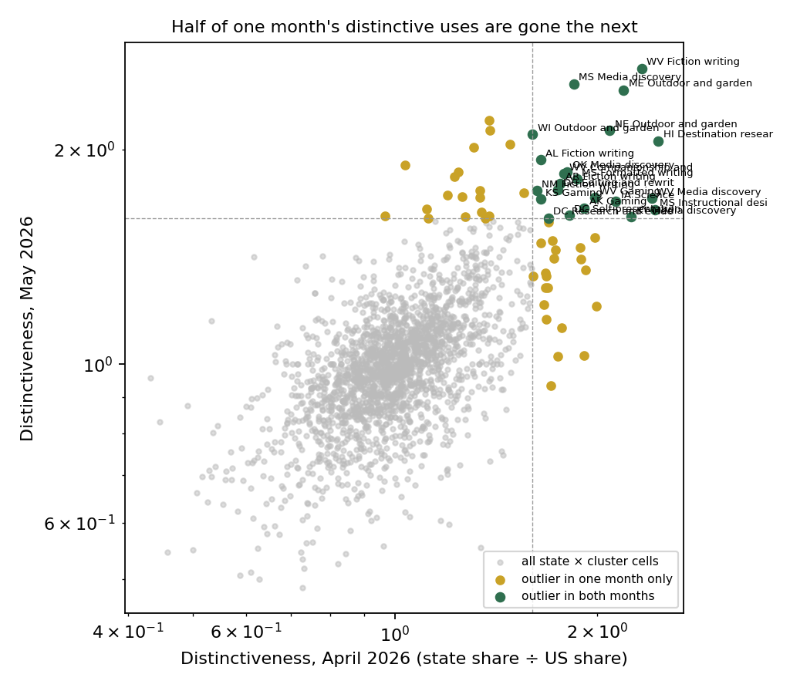
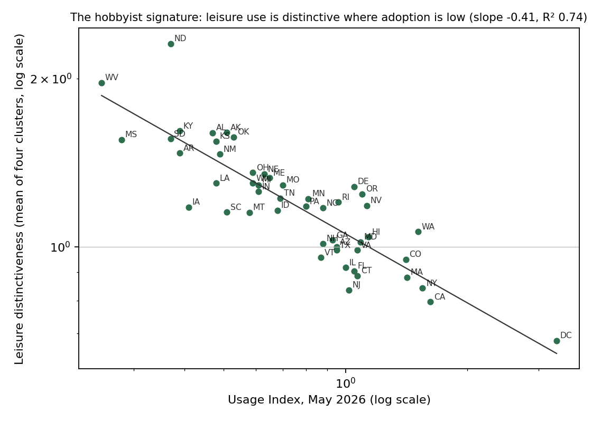
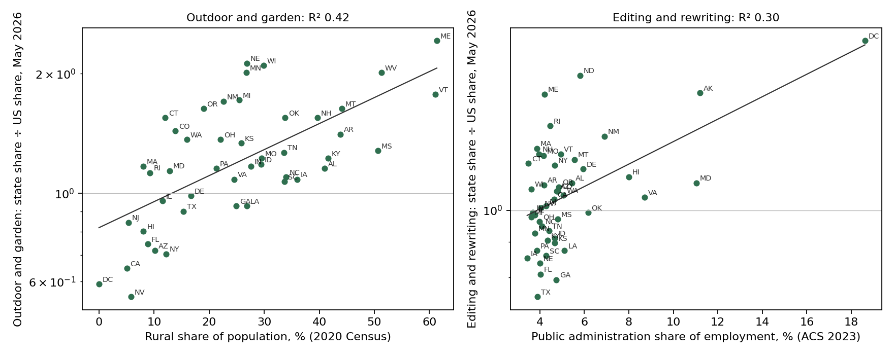

Where AI use is distinctive across US states, and why
September 2026 · Evidence from Claude, with Microsoft and OpenAI beside it
The outliers
West Virginia asks Claude for fiction writing at 2.3 times the national rate, for companionship at 1.8 times, for gaming help at 1.7. Maine and Nebraska ask about outdoor and garden work at more than twice the rate. Hawaii researches destinations at twice the rate. Washington DC edits and rewrites at 1.7 times the rate and works on how it presents itself at 1.6. Mississippi, Arkansas, Alabama and New Mexico write fiction; Alaska and Kansas game; Iowa does science.
Anthropic's reports describe places like this. Its September 2025 report noted DC's "disproportionate focus on document editing, information provision and job applications," and its country spotlights do the same for Australian states and Canadian provinces. The press has turned three providers' state rankings into stories about the AI culture of each state. This post asks two questions the descriptions skip. Are the distinctive uses real, in the sense that they are there again a month later? And for the ones that are, what about the place explains them?
The answers, in order: half of them are not; the biggest single pattern among the real ones is not about the places at all but about who is using Claude there; two of the rest can be tied to something measurable about the state; and one is a puzzle the post leaves open rather than inventing a reason.
Distinctive is a description, not a ranking. Utah is excluded throughout: Anthropic flagged its August 2025 traffic as possibly "coordinated abuse."
Are they real?
The June 2026 release publishes two full months, April and May, with the same taxonomy, which makes a persistence test possible for the first time. Distinctiveness here is a state's share of a request cluster divided by the national share, for the 53 level-1 clusters that account for at least half a percent of national use. An outlier is a cell at 1.6 times or more.
There are 49 such cells in April and 59 in May. Twenty-two appear in both months. Forty-five percent of April's distinctive uses are still distinctive in May; at a threshold of twice the national rate the count falls to four. The month-to-month correlation of distinctiveness across all 2,600 cells is 0.62. And the outliers are a small-state phenomenon: the seventeen states with the least Claude use produce 1.8 single-month outliers each, the middle seventeen 1.0, and the seventeen largest 0.1. The pre-registered test asked whether recurrence rises with state size; it does not detectably, because the large states produce almost no outliers to recur. A distinctive use reported from one window of data is a coin flip; a distinctive use in a large state is rare.

DC's editing survives the test. So do the twenty-one others listed above, and they are what the rest of the post explains.
Evidence: the persistence test
Table · The 22 persistent outliers with their April and May distinctiveness
| state | cluster | apr | may | recurs | log_usage | min |
|---|---|---|---|---|---|---|
| WV | Fiction writing | 2.330 | 2.598 | 1 | -2.040 | 2.330 |
| ME | Outdoor and garden | 2.190 | 2.423 | 1 | -1.347 | 2.190 |
| NE | Outdoor and garden | 2.086 | 2.127 | 1 | -1.022 | 2.086 |
| HI | Destination research | 2.468 | 2.057 | 1 | -0.799 | 2.057 |
| MS | Media discovery | 1.846 | 2.472 | 1 | -1.427 | 1.846 |
| MS | Formatted writing | 1.865 | 1.817 | 1 | -1.427 | 1.817 |
| OK | Media discovery | 1.803 | 1.862 | 1 | -0.462 | 1.803 |
| WV | Companionship and conversation | 1.785 | 1.850 | 1 | -2.040 | 1.785 |
| AR | Fiction writing | 1.761 | 1.793 | 1 | -1.050 | 1.761 |
| DC | Editing and rewriting | 1.748 | 1.757 | 1 | -0.274 | 1.748 |
| WV | Gaming | 1.983 | 1.711 | 1 | -2.040 | 1.711 |
| WV | Media discovery | 2.410 | 1.707 | 1 | -2.040 | 1.707 |
| IA | Science | 2.130 | 1.691 | 1 | -0.968 | 1.691 |
| AK | Gaming | 1.914 | 1.656 | 1 | -2.207 | 1.656 |
| MS | Instructional design | 2.436 | 1.648 | 1 | -1.427 | 1.648 |
| AL | Fiction writing | 1.648 | 1.935 | 1 | -0.342 | 1.648 |
| KS | Gaming | 1.647 | 1.703 | 1 | -0.892 | 1.647 |
| NM | Fiction writing | 1.625 | 1.750 | 1 | -1.204 | 1.625 |
| DC | Self-presentation writing | 1.816 | 1.618 | 1 | -0.274 | 1.618 |
| KY | Media discovery | 2.248 | 1.610 | 1 | -0.673 | 1.610 |
| WI | Outdoor and garden | 1.603 | 2.099 | 1 | 0.020 | 1.603 |
| DC | Research and evidence | 1.692 | 1.603 | 1 | -0.274 | 1.603 |
Script · scripts/09_outliers.py
"""Step 09 (pre-registered H1): distinctiveness of level-1 request clusters by state, April and May 2026; which outliers persist;
recurrence against state size. Also builds the covariates for H3 (Census industry, enrolment, rural share)."""
import pandas as pd, numpy as np, statsmodels.formula.api as smf, json
RAW="data/raw"; OUT="data/processed"; MINSHARE=0.5; THR=1.6
j=pd.read_csv(f"{RAW}/release_2026_06_26/aei_claude_ai_2026-06-26.csv",keep_default_na=False,low_memory=False,usecols=["date_start","geo_id","geo_level","category_name","hierarchy_level","metric_id","value","node_name"]); j["value"]=pd.to_numeric(j.value,errors="coerce")
req=j[(j.category_name=="request")&(j.hierarchy_level.astype(str)=="1")&(j.metric_id=="pct")]
D={}
for ds,m_ in [("2026-04-01","apr"),("2026-05-01","may")]:
m=req[req.date_start==ds]; us=m[(m.geo_level=="country")&(m.geo_id=="USA")].set_index("node_name").value
p=m[(m.geo_level=="subregion")&(m.geo_id.str.startswith("US-"))].pivot_table(index="geo_id",columns="node_name",values="value"); p.index=p.index.str[3:]
p=p.loc[[i for i in p.index if len(i)==2 and i!="UT"]]; us=us.reindex(p.columns); keep=us[us>=MINSHARE].index; d=p[keep].div(us[keep],axis=1); D[m_]=d; d.to_csv(f"{OUT}/09_distinctiveness_{m_}.csv")
a,b=D["apr"],D["may"]; cols=a.columns.intersection(b.columns); a=a[cols]; b=b[cols]
print(f"clusters with >= {MINSHARE}% of US use in both months: {len(cols)}; states {len(a)} (Utah excluded)")
oa=(a>=THR); ob=(b>=THR); both=oa&ob
print(f"outlier cells (>= {THR}x): April {int(oa.sum().sum())}, May {int(ob.sum().sum())}, both {int(both.sum().sum())}; recurrence of April outliers {both.sum().sum()/oa.sum().sum():.0%}, of May outliers {both.sum().sum()/ob.sum().sum():.0%}")
s=pd.concat([np.log(a.stack()).rename("a"),np.log(b.stack()).rename("b")],axis=1).dropna(); print(f"month-to-month correlation of log distinctiveness: {s.a.corr(s.b):.2f}")
# usage share by state (May) for the size test
ov=pd.read_csv(f"{OUT}/01_june_overall.csv",index_col=0); usage=ov[ov.wave=="2026-05"].usage_pct
cells=[]
for st in a.index:
for c in cols:
if oa.loc[st,c]: cells.append({"state":st,"cluster":c,"apr":a.loc[st,c],"may":b.loc[st,c],"recurs":int(both.loc[st,c]),"log_usage":np.log(usage[st])})
cells=pd.DataFrame(cells); m=smf.ols("recurs ~ log_usage",data=cells).fit(cov_type="HC3"); lo,hi=m.conf_int().loc["log_usage"]
print(f"recurrence on log state usage share (linear probability, {len(cells)} April outlier cells): {m.params.log_usage:+.3f} [{lo:+.3f},{hi:+.3f}] MDE {2.8*m.bse.log_usage:.3f}")
terc=pd.qcut(usage.reindex(a.index),3,labels=["small","mid","large"]); byt=cells.assign(t=cells.state.map(terc)).groupby("t").recurs.mean(); print("recurrence by state-size tercile:", byt.round(2).to_dict()); cnt=oa.sum(axis=1); print("April outliers per state by tercile (mean):", cnt.groupby(terc).mean().round(1).to_dict())
pers=cells[cells.recurs==1].sort_values("may",ascending=False); pers["min"]=pers[["apr","may"]].min(axis=1); pers=pers.sort_values("min",ascending=False); pers.to_csv(f"{OUT}/09_persistent.csv",index=False)
print("persistent outliers:"); [print(f" {r.state} {r['min']:.1f}x {r.cluster}") for _,r in pers.iterrows()]
# thresholds robustness
for t in (1.5,2.0): print(f" threshold {t}: April {int((a>=t).sum().sum())}, May {int((b>=t).sum().sum())}, both {int(((a>=t)&(b>=t)).sum().sum())}")
# ---- covariates for H3
FIPS={"01":"AL","02":"AK","04":"AZ","05":"AR","06":"CA","08":"CO","09":"CT","10":"DE","11":"DC","12":"FL","13":"GA","15":"HI","16":"ID","17":"IL","18":"IN","19":"IA","20":"KS","21":"KY","22":"LA","23":"ME","24":"MD","25":"MA","26":"MI","27":"MN","28":"MS","29":"MO","30":"MT","31":"NE","32":"NV","33":"NH","34":"NJ","35":"NM","36":"NY","37":"NC","38":"ND","39":"OH","40":"OK","41":"OR","42":"PA","44":"RI","45":"SC","46":"SD","47":"TN","48":"TX","49":"UT","50":"VT","51":"VA","53":"WA","54":"WV","55":"WI","56":"WY"}
def acs(t):
c=pd.read_csv(f"{RAW}/census/acsdt1y2023-{t}.dat",sep="|",dtype=str); c=c[c.GEO_ID.str.startswith("0400000US")].copy(); c["state"]=c.GEO_ID.str[-2:].map(FIPS); return c.dropna(subset=["state"]).set_index("state").apply(pd.to_numeric,errors="coerce")
i=acs("c24030"); tot=i.C24030_E001; F=27 # female offset in C24030: 55 estimates, male block 002-028, female 029-055
cov=pd.DataFrame({"agri_share":(i.C24030_E004+i[f"C24030_E{4+F:03d}"])/tot*100,"arts_accom_share":(i.C24030_E024+i[f"C24030_E{24+F:03d}"])/tot*100,"pubadmin_share":(i.C24030_E028+i[f"C24030_E{28+F:03d}"])/tot*100})
e=acs("b14001"); cov["college_share"]=(e.B14001_E008+e.B14001_E009)/e.B14001_E001*100
ru=pd.read_csv(f"{RAW}/census/PctUrbanRural_State.txt",sep=",",encoding="latin-1"); ru.columns=[c.strip() for c in ru.columns]
name2=pd.read_csv(f"{RAW}/release_2025_09_15/working_age_pop_2024_us_state.csv").set_index("state")["state_code"]; ru["state"]=ru["STATENAME"].map(name2); cov=cov.join(ru.dropna(subset=["state"]).set_index("state")[["POPPCT_RURAL"]].rename(columns={"POPPCT_RURAL":"rural_share"}).astype(float))
cov=cov.join(np.log(usage).rename("log_usage")).join(np.log(ov[ov.wave=="2026-05"].usage_per_capita_index).rename("log_aui")).join(ov[ov.wave=="2026-05"].use_case_personal_pct.rename("personal_share"))
cov.to_csv(f"{OUT}/09_covariates_outliers.csv")
print("covariate spot checks: DC public admin %.1f%% (Census ~17), VT rural %.1f%% (Census 64.9), HI arts/accommodation %.1f%%, NE agriculture %.1f%%, UT college %.1f%%" % (cov.loc["DC","pubadmin_share"],cov.loc["VT","rural_share"],cov.loc["HI","arts_accom_share"],cov.loc["NE","agri_share"],cov.loc["UT","college_share"]))
res={"clusters":int(len(cols)),"outliers":{"apr":int(oa.sum().sum()),"may":int(ob.sum().sum()),"both":int(both.sum().sum())},"recurrence_apr":round(both.sum().sum()/oa.sum().sum(),3),"corr_months":round(s.a.corr(s.b),3),"recurrence_on_log_usage":{"coef":round(m.params.log_usage,3),"ci":[round(lo,3),round(hi,3)],"mde":round(2.8*m.bse.log_usage,3)},"recurrence_by_tercile":byt.round(3).to_dict(),"persistent":pers[["state","cluster","apr","may"]].round(2).to_dict("records")}
res["H1"]="HOLDS" if res["recurrence_apr"]<0.6 and lo>0 else "DOES NOT HOLD"; print("H1 (recurrence < 60% and rises with usage):", res["H1"])
json.dump(res,open(f"{OUT}/09_outliers.json","w"),indent=1); assert 15<=len(pers)<=40 and cov.rural_share.notna().sum()>=50; print("CHECK OK")
Check block · what the script printed when it ran
clusters with >= 0.5% of US use in both months: 53; states 50 (Utah excluded)
outlier cells (>= 1.6x): April 49, May 59, both 22; recurrence of April outliers 45%, of May outliers 37%
month-to-month correlation of log distinctiveness: 0.62
recurrence on log state usage share (linear probability, 49 April outlier cells): +0.007 [-0.191,+0.205] MDE 0.282
recurrence by state-size tercile: {'small': 0.42, 'mid': 0.56, 'large': 0.0}
April outliers per state by tercile (mean): {'small': 1.8, 'mid': 1.0, 'large': 0.1}
persistent outliers:
WV 2.3x Fiction writing
ME 2.2x Outdoor and garden
NE 2.1x Outdoor and garden
HI 2.1x Destination research
MS 1.8x Media discovery
MS 1.8x Formatted writing
OK 1.8x Media discovery
WV 1.8x Companionship and conversation
AR 1.8x Fiction writing
DC 1.7x Editing and rewriting
WV 1.7x Gaming
WV 1.7x Media discovery
IA 1.7x Science
AK 1.7x Gaming
MS 1.6x Instructional design
AL 1.6x Fiction writing
KS 1.6x Gaming
NM 1.6x Fiction writing
DC 1.6x Self-presentation writing
KY 1.6x Media discovery
WI 1.6x Outdoor and garden
DC 1.6x Research and evidence
threshold 1.5: April 78, May 91, both 30
threshold 2.0: April 12, May 13, both 4
covariate spot checks: DC public admin 18.6% (Census ~17), VT rural 61.1% (Census 64.9), HI arts/accommodation 14.6%, NE agriculture 4.3%, UT college 8.2%
H1 (recurrence < 60% and rises with usage): DOES NOT HOLD
CHECK OK
What jobs explain, and what they do not
Before the outliers, the structure. Anthropic's January 2026 report explains most of how much a state uses Claude with the share of its workforce in computer and mathematical occupations. That reproduces: 0.37 log points of usage per capita per point of share on the August 2025 wave, 62% of the variance, against the report's 0.36 and "nearly two-thirds." After the workforce, education adds ten points of variance and nothing else does, which is what Doms found for personal computers and Skinner and Staiger for hybrid corn and beta blockers. And three providers see the same places above and below their labour-market line: after the workforce share is removed, Anthropic's state residuals correlate 0.70 with OpenAI's and 0.50 with Microsoft's.
But jobs do not explain what a state uses Claude for. The occupational content of conversations, which Anthropic infers from the tasks people bring, is nearly the same in every state: computer and mathematical work is 19% to 27% of conversations everywhere, against 1.5% to 7.9% of workforces, and where the workforce is most technical the conversations are slightly less so. That invariant content explains 21% of the variation between states in what conversations produce. The other four-fifths is where the outliers live, and none of the twenty-two is composition: regressed on the user occupation shares most related to it, no persistent cluster's distinctiveness has a variance explained above 0.42 in either month, and most are below 0.2.
Evidence: the replication, the decomposition and the three providers
Script · scripts/02_replicate.py
"""Step 02: replicate Anthropic's two state-level results before anything new.
(a) January 2026: "each 1% increase in the share of such tech workers in a state is associated with 0.36% higher usage per capita",
explaining "nearly two-thirds of the cross-state variation". Their workforce shares are BLS OEWS; ours are ACS 2023 (C24010,
computer and mathematical occupations), so a small discrepancy is expected and is reported, not hidden.
(b) The state Gini of the Usage Index: 0.37 (Aug 2025), 0.31 (Nov 2025), 0.29 (Feb 2026), from Lorenz curves of usage share
against working-age-population share. Extended to Apr and May 2026."""
import pandas as pd, numpy as np, statsmodels.formula.api as smf, json
OUT="data/processed"; L=pd.read_csv(f"{OUT}/01_state_levels.csv",index_col=0); C=pd.read_csv(f"{OUT}/01_covariates.csv",index_col=0)
pop=pd.read_csv("data/raw/release_2025_09_15/working_age_pop_2024_us_state.csv").set_index("state_code")["working_age_pop"]
res={}
print("(a) log(Usage Index) on the computer & math workforce share in percentage points (Anthropic's 'each 1% increase in the share' is one point of share; the log-log elasticity is ~1.2-1.5 and does not match), by wave, 51 states, HC3; Utah shown with and without:")
for wave in ["2025-08","2025-11","2026-02","2026-04","2026-05"]:
d=L[L.wave==wave].join(C[["wf_Computer and Mathematical"]]).rename(columns={"wf_Computer and Mathematical":"tech"}).dropna(subset=["aui","tech"])
d["log_aui"]=np.log(d.aui); d["log_tech"]=np.log(d.tech)
out={}
for tag,dd in [("all",d),("no UT",d.drop("UT",errors="ignore"))]:
m=smf.ols("log_aui ~ tech",data=dd).fit(cov_type="HC3"); lo,hi=m.conf_int().loc["tech"]; out[tag]={"elasticity":round(m.params.tech,3),"ci":[round(lo,3),round(hi,3)],"r2":round(m.rsquared,3),"n":int(m.nobs)}
res[wave]=out; print(f" {wave}: all {out['all']['elasticity']:+.3f} [{out['all']['ci'][0]:+.2f},{out['all']['ci'][1]:+.2f}] R2 {out['all']['r2']:.2f} | without Utah {out['no UT']['elasticity']:+.3f} R2 {out['no UT']['r2']:.2f}")
print(" Anthropic (January 2026 report, BLS shares): 0.36 per point, R2 'nearly two-thirds'. Reproduced on the August 2025 wave (0.369, R2 0.62); the November wave gives 0.28 and R2 0.48 with ACS shares.")
def gini(x):
x=np.sort(np.asarray(x.dropna())); n=len(x); return (2*np.sum(np.arange(1,n+1)*x)/(n*x.sum()))-(n+1)/n
print("\n(b) State Gini of the Usage Index (unweighted over 51 states; the population-weighted Lorenz version gives 0.32/0.28/0.21 and does not match the report):")
g={}
for wave in ["2025-08","2025-11","2026-02","2026-04","2026-05"]:
d=L[L.wave==wave]
g[wave]={"gini":round(gini(d.aui),3),"gini_no_UT":round(gini(d.aui.drop("UT",errors="ignore")),3)}
print(f" {wave}: {g[wave]['gini']:.3f} (without Utah {g[wave]['gini_no_UT']:.3f})")
print(" Anthropic: 0.37 (Aug), 0.31 (Nov), 0.29 (Feb).")
res["gini"]=g; json.dump(res,open(f"{OUT}/02_replicate.json","w"),indent=1)
assert abs(g["2025-08"]["gini"]-0.37)<0.02 and abs(g["2025-11"]["gini"]-0.31)<0.02 and abs(g["2026-02"]["gini"]-0.29)<0.02, "Gini series must reproduce within 0.02"
assert abs(res["2025-08"]["all"]["elasticity"]-0.36)<0.03, "elasticity should be in the neighbourhood of 0.36"
print("CHECK OK")
Check block · what the script printed when it ran
(a) log(Usage Index) on the computer & math workforce share in percentage points (Anthropic's 'each 1% increase in the share' is one point of share; the log-log elasticity is ~1.2-1.5 and does not match), by wave, 51 states, HC3; Utah shown with and without: 2025-08: all +0.369 [+0.28,+0.46] R2 0.62 | without Utah +0.351 R2 0.65 2025-11: all +0.280 [+0.17,+0.39] R2 0.48 | without Utah +0.280 R2 0.47 2026-02: all +0.296 [+0.20,+0.39] R2 0.61 | without Utah +0.295 R2 0.60 2026-04: all +0.298 [+0.21,+0.39] R2 0.61 | without Utah +0.296 R2 0.60 2026-05: all +0.294 [+0.21,+0.38] R2 0.61 | without Utah +0.293 R2 0.60 Anthropic (January 2026 report, BLS shares): 0.36 per point, R2 'nearly two-thirds'. Reproduced on the August 2025 wave (0.369, R2 0.62); the November wave gives 0.28 and R2 0.48 with ACS shares. (b) State Gini of the Usage Index (unweighted over 51 states; the population-weighted Lorenz version gives 0.32/0.28/0.21 and does not match the report): 2025-08: 0.367 (without Utah 0.334) 2025-11: 0.318 (without Utah 0.321) 2026-02: 0.286 (without Utah 0.287) 2026-04: 0.282 (without Utah 0.283) 2026-05: 0.278 (without Utah 0.279) Anthropic: 0.37 (Aug), 0.31 (Nov), 0.29 (Feb). CHECK OK
Script · scripts/03_stage1_selection.py
"""Step 03, stage 1 of the decomposition: who in each state uses Claude. Compares the occupation mix Anthropic infers from
conversations (user composition, soc_occupation shares by state; Aug 2025 and May 2026) with the state's workforce (ACS C24010).
Questions: which occupations are over-represented among users everywhere; how much of the state-to-state variation in the
users' tech share is the workforce's tech share; and how selected each state's user base is (a dissimilarity index)."""
import pandas as pd, numpy as np, statsmodels.formula.api as smf, json
OUT="data/processed"; C=pd.read_csv(f"{OUT}/01_covariates.csv",index_col=0); wf=C[[c for c in C.columns if c.startswith("wf_")]]; wf.columns=[c[3:] for c in wf.columns]
res={}
# August 2025 state occupation shares are unusable for a mix: not_classified averages 74% and 679 of 1,034 cells are suppressed. Stage 1 uses April and May 2026.
for wave in ["2026-04","2026-05"]:
soc=pd.read_csv(f"{OUT}/01_soc_{wave}.csv",index_col=0); soc=soc.drop(columns=[c for c in soc.columns if c=="not_classified"],errors="ignore")
print(f"\n{wave}: suppressed cells {int(soc.isna().sum().sum())} of {soc.size} (small groups in small states); treated as zero, row sums before fill: median {soc.sum(axis=1).median():.1f}")
soc=soc.fillna(0); soc=soc.div(soc.sum(axis=1),axis=0)*100 # renormalise over classified groups
common=[g for g in wf.columns if g in soc.columns]; miss=[g for g in soc.columns if g not in wf.columns]
print(f"\n{wave}: user groups {soc.shape[1]}, matched to workforce {len(common)}; unmatched user groups: {miss}")
u=soc[common]; w=wf.loc[u.index,common]
# (i) over-representation ratio, all-state usage-weighted mean of user share / workforce share
ratio=(u.mean()/w.mean()).sort_values(ascending=False); print(" over-representation among users (mean user share / mean workforce share):"); print(" "+", ".join(f"{g} {r:.1f}x" for g,r in ratio.head(6).items())+" ... "+", ".join(f"{g} {r:.2f}x" for g,r in ratio.tail(3).items()))
# (ii) does the workforce tech share predict the users' tech share across states?
d=pd.DataFrame({"user_tech":u["Computer and Mathematical"],"wf_tech":w["Computer and Mathematical"]}).dropna(); d=d.drop("UT",errors="ignore")
m=smf.ols("user_tech ~ wf_tech",data=d).fit(cov_type="HC3"); lo,hi=m.conf_int().loc["wf_tech"]
print(f" users' computer/math share on workforce computer/math share (no Utah): {m.params.wf_tech:+.2f} [{lo:+.2f},{hi:+.2f}] per point, R2 {m.rsquared:.2f}, N {int(m.nobs)}; user share mean {d.user_tech.mean():.1f}%, workforce mean {d.wf_tech.mean():.1f}%")
# (iii) dissimilarity index per state: half the sum of absolute differences between user and workforce shares
dis=(u-w).abs().sum(axis=1)/2; print(f" dissimilarity user vs workforce mix: median {dis.median():.1f} pts, min {dis.min():.1f} ({dis.idxmin()}), max {dis.max():.1f} ({dis.idxmax()})")
top=dis.sort_values(ascending=False).head(5).round(1).to_dict(); print(" most selected user bases:", top)
res[wave]={"ratio":ratio.round(2).to_dict(),"user_on_wf_tech":{"coef":round(m.params.wf_tech,3),"ci":[round(lo,3),round(hi,3)],"r2":round(m.rsquared,3),"n":int(m.nobs)},"dissimilarity":dis.round(2).to_dict()}
pd.concat([u.add_prefix("user_"),w.add_prefix("wf_"),dis.rename("dissimilarity")],axis=1).to_csv(f"{OUT}/03_stage1_{wave}.csv")
json.dump(res,open(f"{OUT}/03_stage1.json","w"),indent=1)
assert res["2026-05"]["ratio"]["Computer and Mathematical"]>3 and abs(pd.read_csv(f"{OUT}/03_stage1_2026-05.csv",index_col=0)["user_Computer and Mathematical"].median()-21)<3, "computer/math should be heavily over-represented among users"
print("CHECK OK")
Check block · what the script printed when it ran
2026-04: suppressed cells 227 of 1122 (small groups in small states); treated as zero, row sums before fill: median 95.5
2026-04: user groups 22, matched to workforce 22; unmatched user groups: []
over-representation among users (mean user share / mean workforce share):
Arts, Design, Entertainment, Sports, and Media 6.7x, Computer and Mathematical 6.7x, Life, Physical, and Social Science 3.7x, Educational Instruction and Library 2.0x, Community and Social Service 1.6x, Architecture and Engineering 1.4x ... Building and Grounds Cleaning and Maintenance 0.02x, Farming, Fishing, and Forestry 0.01x, Construction and Extraction 0.00x
users' computer/math share on workforce computer/math share (no Utah): -0.59 [-0.93,-0.25] per point, R2 0.20, N 50; user share mean 23.7%, workforce mean 3.5%
dissimilarity user vs workforce mix: median 45.9 pts, min 39.9 (CO), max 60.9 (WY)
most selected user bases: {'WY': 60.9, 'SD': 57.4, 'MS': 57.1, 'AK': 55.3, 'ND': 54.9}
2026-05: suppressed cells 188 of 1122 (small groups in small states); treated as zero, row sums before fill: median 98.4
2026-05: user groups 22, matched to workforce 22; unmatched user groups: []
over-representation among users (mean user share / mean workforce share):
Arts, Design, Entertainment, Sports, and Media 6.6x, Computer and Mathematical 6.2x, Life, Physical, and Social Science 3.4x, Educational Instruction and Library 1.9x, Community and Social Service 1.7x, Sales and Related 1.4x ... Building and Grounds Cleaning and Maintenance 0.02x, Farming, Fishing, and Forestry 0.02x, Construction and Extraction 0.01x
users' computer/math share on workforce computer/math share (no Utah): -0.48 [-0.72,-0.24] per point, R2 0.26, N 50; user share mean 22.0%, workforce mean 3.5%
dissimilarity user vs workforce mix: median 44.4 pts, min 38.2 (CO), max 54.6 (WY)
most selected user bases: {'WY': 54.6, 'SD': 52.6, 'AK': 51.3, 'WV': 51.1, 'MS': 50.8}
CHECK OK
Script · scripts/04_stage2_mix.py
"""Step 04, stage 2 (pre-registered H2): do the users' jobs explain what each state asks for and makes?
Expected mix(s) = sum_g user_share(g,s) x US within-group mix(g); observed = the state's overall shares. June 2026, May primary, April replication."""
import pandas as pd, numpy as np, statsmodels.api as sm, json
OUT="data/processed"; j=pd.read_csv("data/raw/release_2026_06_26/aei_claude_ai_2026-06-26.csv",keep_default_na=False,low_memory=False,usecols=["date_start","geo_id","geo_level","category_name","hierarchy_level","metric_id","value","node_name"]); j["value"]=pd.to_numeric(j.value,errors="coerce")
ov=pd.read_csv(f"{OUT}/01_june_overall.csv",index_col=0); res={}
fam={"artifact":[c for c in ov.columns if c.startswith("artifact_")],"use_case":[c for c in ov.columns if c.startswith("use_case_")],"collaboration":["collaboration_directive_pct","collaboration_feedback_loop_pct","collaboration_task_iteration_pct","collaboration_learning_pct","collaboration_validation_pct"]}
for ds,wave in [("2026-05-01","2026-05"),("2026-04-01","2026-04")]:
# within-group mix from the UNITED STATES rows (country level publishes all metrics for SOC major groups), not the global rows:
# the global mix under-predicts advice and email for every US state alike, which is a US-vs-world difference, not a state one.
g=j[(j.geo_level=="country")&(j.geo_id=="USA")&(j.date_start==ds)&(j.category_name=="soc_occupation")&(j.hierarchy_level.astype(str)=="1")]
mix=g.pivot_table(index="node_name",columns="metric_id",values="value"); assert mix.shape[0]>=21 and "artifact_explanation_or_answer_pct" in mix.columns, mix.shape
u=pd.read_csv(f"{OUT}/01_soc_{wave}.csv",index_col=0).drop(columns=["not_classified"],errors="ignore").fillna(0); u=u.div(u.sum(axis=1),axis=0)
groups=[x for x in u.columns if x in mix.index]; assert len(groups)>=21, groups
o=ov[ov.wave==wave].drop(columns=["wave"]).drop(index="UT",errors="ignore"); u=u.loc[o.index.intersection(u.index),groups]; o=o.loc[u.index]
res[wave]={}
print(f"\n{wave}: {len(u)} states (Utah excluded), {len(groups)} occupation groups")
for name,cols in fam.items():
cols=[c for c in cols if c in mix.columns and c in o.columns]; E=u.values@mix.loc[groups,cols].fillna(0).values; E=pd.DataFrame(E,index=u.index,columns=cols); O=o[cols]
Od=O-O.mean(); Ed=E-E.mean(); x=Ed.values.ravel(); y=Od.values.ravel(); m=sm.OLS(y,sm.add_constant(x)).fit()
dis=((O-E).abs().sum(axis=1)/2); top=dis.sort_values(ascending=False).head(5)
# per-state driver: the category with the largest absolute residual
drivers={s:(O.loc[s]-E.loc[s]).abs().idxmax().replace("artifact_","").replace("_pct","")+f" ({(O.loc[s]-E.loc[s])[(O.loc[s]-E.loc[s]).abs().idxmax()]:+.1f})" for s in top.index}
var_between=float(np.mean(O.var(ddof=0))) # mean between-state variance per category
res[wave][name]={"pooled_r2":round(m.rsquared,3),"slope":round(m.params[1],3),"n_cells":int(len(y)),"dissimilarity_median":round(dis.median(),2),"top5":{k:round(v,2) for k,v in top.items()},"drivers":drivers,"user_mix_dissim_from_global":None}
print(f" {name:14s} pooled R2 {m.rsquared:.3f} (slope {m.params[1]:.2f}, {len(y)} cells) | dissimilarity observed vs expected: median {dis.median():.1f} pts, top5 {top.round(1).to_dict()} | drivers {drivers}")
pd.concat([O.add_prefix("obs_"),E.add_prefix("exp_"),dis.rename("dissimilarity")],axis=1).to_csv(f"{OUT}/04_stage2_{name}_{wave}.csv")
if name=="artifact":
# how much do states differ at all? compare the expected mix's own spread to the observed spread
print(f" between-state SD of observed shares (mean over categories) {np.sqrt(O.var(ddof=0)).mean():.2f} pts; of expected {np.sqrt(E.var(ddof=0)).mean():.2f} pts; corr of per-category SDs {np.corrcoef(O.std(),E.std())[0,1]:.2f}")
r=res["2026-05"]["artifact"]["pooled_r2"]; verdict="EXPLAINS THE MIX" if r>=0.5 else ("DOES NOT" if r<0.25 else "PARTIAL"); print("\nPre-registered verdict (artifact mix, May):", verdict, f"(pooled R2 {r})"); res["verdict"]=verdict
top5=set(res["2026-05"]["artifact"]["top5"])&set(res["2026-04"]["artifact"]["top5"]); print("largest residual states in both months:", sorted(top5)); res["top5_both_months"]=sorted(top5)
json.dump(res,open(f"{OUT}/04_stage2.json","w"),indent=1); print("CHECK OK")
Check block · what the script printed when it ran
2026-05: 50 states (Utah excluded), 22 occupation groups
artifact pooled R2 0.207 (slope 1.70, 1600 cells) | dissimilarity observed vs expected: median 4.0 pts, top5 {'WV': 10.0, 'SD': 9.6, 'AK': 8.4, 'MS': 8.2, 'WY': 7.8} | drivers {'WV': 'email_or_message (-3.7)', 'SD': 'none (+2.3)', 'AK': 'explanation_or_answer (+2.5)', 'MS': 'email_or_message (-2.4)', 'WY': 'document_or_report (+1.6)'}
between-state SD of observed shares (mean over categories) 0.37 pts; of expected 0.08 pts; corr of per-category SDs 0.90
use_case pooled R2 0.381 (slope 3.01, 150 cells) | dissimilarity observed vs expected: median 3.1 pts, top5 {'AK': 6.7, 'DC': 6.0, 'FL': 5.4, 'IA': 4.9, 'WI': 4.7} | drivers {'AK': 'use_case_personal (+6.7)', 'DC': 'use_case_personal (-6.0)', 'FL': 'use_case_work (+5.4)', 'IA': 'use_case_coursework (+4.9)', 'WI': 'use_case_work (-4.7)'}
collaboration pooled R2 0.320 (slope 2.12, 250 cells) | dissimilarity observed vs expected: median 1.9 pts, top5 {'SD': 4.2, 'AR': 3.7, 'ND': 3.6, 'SC': 3.4, 'WV': 3.2} | drivers {'SD': 'collaboration_task_iteration (-4.0)', 'AR': 'collaboration_feedback_loop (+2.5)', 'ND': 'collaboration_directive (-3.1)', 'SC': 'collaboration_learning (-2.9)', 'WV': 'collaboration_task_iteration (-2.6)'}
2026-04: 50 states (Utah excluded), 22 occupation groups
artifact pooled R2 0.246 (slope 1.67, 1600 cells) | dissimilarity observed vs expected: median 4.4 pts, top5 {'ND': 11.5, 'WY': 10.0, 'MS': 9.0, 'AK': 9.0, 'SD': 8.6} | drivers {'ND': 'email_or_message (-3.0)', 'WY': 'none (+2.5)', 'MS': 'educational_material (+2.3)', 'AK': 'explanation_or_answer (+2.6)', 'SD': 'advice_or_recommendation (-1.7)'}
between-state SD of observed shares (mean over categories) 0.41 pts; of expected 0.10 pts; corr of per-category SDs 0.88
use_case pooled R2 0.367 (slope 2.70, 150 cells) | dissimilarity observed vs expected: median 3.4 pts, top5 {'IN': 8.3, 'DC': 7.3, 'WY': 6.3, 'WA': 5.9, 'MA': 5.7} | drivers {'IN': 'use_case_coursework (+8.3)', 'DC': 'use_case_personal (-7.3)', 'WY': 'use_case_work (+6.3)', 'WA': 'use_case_personal (+5.9)', 'MA': 'use_case_coursework (+5.7)'}
collaboration pooled R2 0.186 (slope 1.65, 250 cells) | dissimilarity observed vs expected: median 2.1 pts, top5 {'SD': 8.4, 'AK': 7.7, 'WY': 6.0, 'WV': 4.7, 'ID': 4.6} | drivers {'SD': 'collaboration_learning (-5.1)', 'AK': 'collaboration_learning (+5.0)', 'WY': 'collaboration_task_iteration (-4.3)', 'WV': 'collaboration_feedback_loop (+3.7)', 'ID': 'collaboration_directive (+3.6)'}
Pre-registered verdict (artifact mix, May): DOES NOT (pooled R2 0.207)
largest residual states in both months: ['AK', 'MS', 'SD', 'WY']
CHECK OK
Script · scripts/05_place.py
"""Step 05 (pre-registered H3): what is the place? Residual of log Usage Index (May 2026) after the workforce computer/math share,
on education, median age, broadband and income. Utah excluded. HC3, standardised, MDE with every coefficient."""
import pandas as pd, numpy as np, statsmodels.formula.api as smf, json
OUT="data/processed"; L=pd.read_csv(f"{OUT}/01_state_levels.csv",index_col=0); C=pd.read_csv(f"{OUT}/01_covariates.csv",index_col=0)
FIPS={"01":"AL","02":"AK","04":"AZ","05":"AR","06":"CA","08":"CO","09":"CT","10":"DE","11":"DC","12":"FL","13":"GA","15":"HI","16":"ID","17":"IL","18":"IN","19":"IA","20":"KS","21":"KY","22":"LA","23":"ME","24":"MD","25":"MA","26":"MI","27":"MN","28":"MS","29":"MO","30":"MT","31":"NE","32":"NV","33":"NH","34":"NJ","35":"NM","36":"NY","37":"NC","38":"ND","39":"OH","40":"OK","41":"OR","42":"PA","44":"RI","45":"SC","46":"SD","47":"TN","48":"TX","49":"UT","50":"VT","51":"VA","53":"WA","54":"WV","55":"WI","56":"WY"}
a=pd.read_csv("data/raw/census/acsdt1y2023-b01002.dat",sep="|",dtype=str); a=a[a.GEO_ID.str.startswith("0400000US")].copy(); a["state"]=a.GEO_ID.str[-2:].map(FIPS); age=a.dropna(subset=["state"]).set_index("state")["B01002_E001"].astype(float).rename("median_age")
C=C.join(age); C.to_csv(f"{OUT}/05_covariates_plus.csv"); print("median age: DC %.1f, ME %.1f, UT %.1f (Census: 34.8, 44.8, 31.9)" % (age["DC"],age["ME"],age["UT"]))
def z(x): return (x-x.mean())/x.std(ddof=0)
res={}
for wave in ["2026-05","2026-04"]:
d=L[L.wave==wave].join(C).drop(index="UT",errors="ignore").rename(columns={"wf_Computer and Mathematical":"tech"}); d["log_aui"]=np.log(d.aui)
base=smf.ols("log_aui ~ tech",data=d).fit(); d["resid"]=base.resid
for v in ["bachelors_plus","median_age","broadband","log_gdp","tech"]: d["z_"+v]=z(d[v])
specs={"(a) education alone":"resid ~ z_bachelors_plus","(b) education + age + broadband":"resid ~ z_bachelors_plus + z_median_age + z_broadband","(c) income alone":"resid ~ z_log_gdp","(d) education + income":"resid ~ z_bachelors_plus + z_log_gdp",
"(e) not residualised: log AUI on tech + education":"log_aui ~ z_tech + z_bachelors_plus"}
res[wave]={"base_r2":round(base.rsquared,3),"resid_sd":round(d.resid.std(),3)}; print(f"\n{wave}: base R2 (tech share) {base.rsquared:.2f}; residual SD {d.resid.std():.2f} log points; N {len(d)}")
for k,f in specs.items():
m=smf.ols(f,data=d).fit(cov_type="HC3"); row={}
for t in m.params.index[1:]:
lo,hi=m.conf_int().loc[t]; row[t.replace("z_","")]={"coef":round(m.params[t],3),"ci":[round(lo,3),round(hi,3)],"mde":round(2.8*m.bse[t],3)}
res[wave][k]={"r2":round(m.rsquared,3),"terms":row}; print(f" {k:48s} R2 {m.rsquared:.2f} | "+" ".join(f"{t} {v['coef']:+.3f} [{v['ci'][0]:+.2f},{v['ci'][1]:+.2f}] MDE {v['mde']:.2f}" for t,v in row.items()))
d[["aui","log_aui","tech","resid","bachelors_plus","median_age","broadband","log_gdp"]].to_csv(f"{OUT}/05_place_{wave}.csv")
e=res["2026-05"]; ea=e["(a) education alone"]["terms"]["bachelors_plus"]; eb=e["(b) education + age + broadband"]["terms"]["bachelors_plus"]
ok=lambda t: (t["ci"][0]>0 or t["ci"][1]<0) and abs(t["coef"])>=t["mde"]
print("\nPre-registered read-out (May): education explains the residual:", ok(ea) and ok(eb), "| income (c,d):", ok(e["(c) income alone"]["terms"]["log_gdp"]) and ok(e["(d) education + income"]["terms"]["log_gdp"]), "| broadband (b):", ok(eb) and ok(e["(b) education + age + broadband"]["terms"]["broadband"]))
json.dump(res,open(f"{OUT}/05_place.json","w"),indent=1); print("CHECK OK")
Check block · what the script printed when it ran
median age: DC 34.9, ME 44.9, UT 32.3 (Census: 34.8, 44.8, 31.9) 2026-05: base R2 (tech share) 0.60; residual SD 0.32 log points; N 50 (a) education alone R2 0.08 | bachelors_plus +0.088 [-0.00,+0.18] MDE 0.13 (b) education + age + broadband R2 0.28 | bachelors_plus -0.016 [-0.24,+0.21] MDE 0.33 median_age +0.023 [-0.07,+0.12] MDE 0.14 broadband +0.174 [+0.02,+0.33] MDE 0.23 (c) income alone R2 0.10 | log_gdp +0.098 [-0.02,+0.21] MDE 0.17 (d) education + income R2 0.10 | bachelors_plus +0.029 [-0.13,+0.19] MDE 0.23 log_gdp +0.075 [-0.09,+0.24] MDE 0.24 (e) not residualised: log AUI on tech + education R2 0.70 | tech +0.168 [+0.03,+0.31] MDE 0.20 bachelors_plus +0.269 [+0.12,+0.42] MDE 0.21 2026-04: base R2 (tech share) 0.60; residual SD 0.32 log points; N 50 (a) education alone R2 0.09 | bachelors_plus +0.096 [+0.01,+0.18] MDE 0.12 (b) education + age + broadband R2 0.26 | bachelors_plus -0.002 [-0.24,+0.23] MDE 0.34 median_age +0.010 [-0.09,+0.11] MDE 0.14 broadband +0.163 [+0.00,+0.33] MDE 0.23 (c) income alone R2 0.10 | log_gdp +0.103 [+0.01,+0.20] MDE 0.14 (d) education + income R2 0.11 | bachelors_plus +0.038 [-0.13,+0.20] MDE 0.24 log_gdp +0.073 [-0.09,+0.23] MDE 0.23 (e) not residualised: log AUI on tech + education R2 0.71 | tech +0.152 [+0.02,+0.29] MDE 0.20 bachelors_plus +0.292 [+0.15,+0.43] MDE 0.20 Pre-registered read-out (May): education explains the residual: False | income (c,d): False | broadband (b): False CHECK OK
Script · scripts/07_providers.py
"""Step 07 (pre-registered H5): three providers, one map? Levels: Anthropic May 2026 Usage Index, Microsoft Q1 2026 AI user share,
OpenAI 2025 messages-per-capita rank; Spearman raw and after the workforce computer/math share. Mix: OpenAI topic shares by state
against Anthropic request level-2 shares mapped to the same five topics (mapping fixed here, before running)."""
import pandas as pd, numpy as np, statsmodels.api as sm, json
from scipy.stats import spearmanr
OUT="data/processed"; L=pd.read_csv(f"{OUT}/01_state_levels.csv",index_col=0); C=pd.read_csv(f"{OUT}/01_covariates.csv",index_col=0).rename(columns={"wf_Computer and Mathematical":"tech"})
d=pd.DataFrame({"anthropic":np.log(L[L.wave=="2026-05"].aui),"microsoft":C.ms_ai_user_share,"openai":-C.openai_rank_2025,"tech":C.tech}).drop(index="UT")
def resid(y,x): return sm.OLS(y,sm.add_constant(x)).fit().resid
res={"levels":{}}
print("Levels, 50 states (Utah excluded). Spearman rank correlations:")
pairs=[("anthropic","microsoft"),("anthropic","openai"),("microsoft","openai")]
for a,b in pairs:
raw=spearmanr(d[a],d[b]).correlation; r=spearmanr(resid(d[a],d.tech),resid(d[b],d.tech)).correlation; res["levels"][f"{a}-{b}"]={"raw":round(raw,3),"residual_after_tech":round(r,3)}
print(f" {a:9s} vs {b:9s}: raw {raw:+.2f} | after workforce tech share {r:+.2f}")
print(" tech share alone explains: Anthropic R2 %.2f, Microsoft R2 %.2f, OpenAI(rank) R2 %.2f" % tuple(sm.OLS(d[v],sm.add_constant(d.tech)).fit().rsquared for v in ["anthropic","microsoft","openai"]))
lv=[v["residual_after_tech"] for v in res["levels"].values()]; res["levels_verdict"]="AGREE ON THE PLACE" if min(lv)>=0.5 else "DO NOT AGREE"; print(" Pre-registered read-out (all pairs >= 0.5 after composition):", res["levels_verdict"])
# ---- mix. Mapping fixed before running (Anthropic L2 cluster -> OpenAI topic)
MAP={"2025-08":{"Technical help":["Provide comprehensive software development assistance across multiple programming domains and technologies","Help develop and debug complete web applications and user interfaces","Provide technical IT support and troubleshooting assistance","Help with automation scripts, robotics programming, and workflow optimization tasks","Assist with game development programming and mobile gaming projects","Help with Docker containerization and cloud infrastructure deployment","Help develop and debug cross-platform mobile applications with Flutter","Help implement cybersecurity measures and secure authentication systems","Analyze and process data from documents, visual media, and business sources"],
"Writing":["Help edit, improve, and create professional written documents and communications","Assist with creative writing across multiple genres including humor and romantic roleplay","Create comprehensive digital marketing strategies and promotional content","Help with job applications, resumes, and career advancement"],
"Seeking information":["Provide educational tutoring and academic assistance across multiple subjects and disciplines","Provide technical and academic assistance across scientific research and educational domains","Create comprehensive K-12 educational materials and teaching resources"],
"Practical Guidance":["Provide comprehensive financial guidance and investment assistance across multiple domains","Provide medical and sports training guidance","Provide comprehensive domestic life and household management guidance","Help plan and organize events, schedules, and travel arrangements","Provide comprehensive legal assistance including immigration and document services","Provide business operations support and strategic consulting services"],
"Self-expression":["Provide personalized lifestyle advice and recommendations across relationships, spirituality, entertainment, beauty, and parenting"]},
"2026-05":{"Technical help":["Software Development","DevOps & Infrastructure Operations","Cybersecurity & Threat Detection","Data Analysis & Business Intelligence","Document Processing & Extraction"],
"Writing":["Content Creation & Copywriting"],"Seeking information":["Research & Intelligence","Knowledge Retrieval & Enterprise Search","Education & Learning"],
"Practical Guidance":["Hobbies & Lifestyle","Personal AI Assistant","Business Process & Operations","Sales & Revenue Operations","Compliance & Regulatory"],"Self-expression":["Existential, Relational, and Emotional Support","Companionship & General Conversation"]}}
oa=pd.read_csv(f"{OUT}/01_openai_topics_by_state.csv",index_col=0); res["mix"]={}
for wave,mp in MAP.items():
r=pd.read_csv(f"{OUT}/01_request_L2_{wave}.csv",index_col=0).drop(index="UT",errors="ignore").drop(columns=["not_classified","Other / Unclear"],errors="ignore").fillna(0); r=r.div(r.sum(axis=1),axis=0)*100
missing=[c for lst in mp.values() for c in lst if c not in r.columns]; assert not missing, missing
out={}
for topic,lst in mp.items():
A=r[lst].sum(axis=1); O=oa["oa_"+topic].reindex(A.index)*100; rho=spearmanr(A,O,nan_policy="omit").correlation
out[topic]={"spearman":round(rho,3),"anthropic_mean":round(A.mean(),1),"openai_mean":round(O.mean(),1),"anthropic_sd":round(A.std(),2),"openai_sd":round(O.std(),2)}
res["mix"][wave]=out; med=np.median([v["spearman"] for v in out.values()])
print(f"\nMix, Anthropic {wave} L2 mapped vs OpenAI 2025 topics, Spearman across states: "+", ".join(f"{t} {v['spearman']:+.2f} (means A {v['anthropic_mean']} / O {v['openai_mean']})" for t,v in out.items())+f" | median {med:+.2f}")
res["mix"][wave]["median"]=round(med,3)
res["mix_verdict"]="PROPERTY OF THE PLACE" if res["mix"]["2026-05"]["median"]>=0.5 else "PROVIDER USER BASES"; print("Pre-registered read-out (May median >= 0.5):", res["mix_verdict"])
json.dump(res,open(f"{OUT}/07_providers.json","w"),indent=1); print("CHECK OK")
Check block · what the script printed when it ran
Levels, 50 states (Utah excluded). Spearman rank correlations: anthropic vs microsoft: raw +0.78 | after workforce tech share +0.50 anthropic vs openai : raw +0.90 | after workforce tech share +0.70 microsoft vs openai : raw +0.85 | after workforce tech share +0.61 tech share alone explains: Anthropic R2 0.60, Microsoft R2 0.52, OpenAI(rank) R2 0.50 Pre-registered read-out (all pairs >= 0.5 after composition): DO NOT AGREE Mix, Anthropic 2025-08 L2 mapped vs OpenAI 2025 topics, Spearman across states: Technical help -0.12 (means A 40.1 / O 6.8), Writing +0.02 (means A 17.9 / O 26.4), Seeking information -0.36 (means A 16.9 / O 19.4), Practical Guidance -0.33 (means A 19.1 / O 29.7), Self-expression +0.14 (means A 3.6 / O 8.1) | median -0.12 Mix, Anthropic 2026-05 L2 mapped vs OpenAI 2025 topics, Spearman across states: Technical help -0.02 (means A 18.5 / O 6.8), Writing +0.19 (means A 20.5 / O 26.4), Seeking information -0.11 (means A 26.6 / O 19.4), Practical Guidance +0.22 (means A 27.5 / O 29.7), Self-expression +0.26 (means A 6.2 / O 8.1) | median +0.19 Pre-registered read-out (May median >= 0.5): PROVIDER USER BASES CHECK OK
Script · scripts/12_after_jobs.py
"""Step 12 (pre-registered H4): real after jobs? Each persistent cluster's log distinctiveness on the state's user occupation
shares for the groups fixed in the pre-registration; composition if R2 >= 0.5 in both months."""
import pandas as pd, numpy as np, statsmodels.api as sm, json
OUT="data/processed"
G={"Fiction writing":["Arts, Design, Entertainment, Sports, and Media"],"Gaming":["Computer and Mathematical","Arts, Design, Entertainment, Sports, and Media"],"Companionship and conversation":["Arts, Design, Entertainment, Sports, and Media"],"Media discovery":["Arts, Design, Entertainment, Sports, and Media"],
"Science":["Life, Physical, and Social Science"],"Editing and rewriting":["Management","Business and Financial Operations","Office and Administrative Support"],"Self-presentation writing":["Management","Business and Financial Operations","Office and Administrative Support"],"Research and evidence":["Management","Business and Financial Operations","Office and Administrative Support"],
"Outdoor and garden":["Farming, Fishing, and Forestry"],"Destination research":["Sales and Related","Personal Care and Service"],"Instructional design":["Educational Instruction and Library"],"Formatted writing":["Educational Instruction and Library"]}
pers=pd.read_csv(f"{OUT}/09_persistent.csv"); res={}
for c in pers.cluster.unique():
res[c]={}; comp=True
for m_,wave in [("apr","2026-04"),("may","2026-05")]:
d=pd.read_csv(f"{OUT}/09_distinctiveness_{m_}.csv",index_col=0); soc=pd.read_csv(f"{OUT}/01_soc_{wave}.csv",index_col=0).drop(columns=["not_classified"],errors="ignore").fillna(0); soc=soc.div(soc.sum(axis=1),axis=0)*100
y=np.log(d[c]).dropna(); X=soc[G[c]].reindex(y.index).dropna(); y=y.loc[X.index]; m=sm.OLS(y,sm.add_constant(X)).fit(); res[c][m_]=round(m.rsquared,3); comp&=m.rsquared>=0.5
res[c]["composition"]=bool(comp); print(f" {c:32s} R2 on user occupation shares: Apr {res[c]['apr']:.2f}, May {res[c]['may']:.2f} → {'COMPOSITION' if comp else 'not composition'}")
json.dump(res,open(f"{OUT}/12_after_jobs.json","w"),indent=1); print("CHECK OK")
Check block · what the script printed when it ran
Fiction writing R2 on user occupation shares: Apr 0.22, May 0.09 → not composition Outdoor and garden R2 on user occupation shares: Apr 0.07, May 0.00 → not composition Destination research R2 on user occupation shares: Apr 0.07, May 0.10 → not composition Media discovery R2 on user occupation shares: Apr 0.15, May 0.04 → not composition Formatted writing R2 on user occupation shares: Apr 0.03, May 0.00 → not composition Companionship and conversation R2 on user occupation shares: Apr 0.00, May 0.02 → not composition Editing and rewriting R2 on user occupation shares: Apr 0.19, May 0.02 → not composition Gaming R2 on user occupation shares: Apr 0.30, May 0.30 → not composition Science R2 on user occupation shares: Apr 0.03, May 0.42 → not composition Instructional design R2 on user occupation shares: Apr 0.30, May 0.28 → not composition Self-presentation writing R2 on user occupation shares: Apr 0.01, May 0.02 → not composition Research and evidence R2 on user occupation shares: Apr 0.24, May 0.11 → not composition CHECK OK
The hobbyist signature
Four of the persistent clusters are leisure: fiction writing, gaming, companionship and conversation, media discovery. Nine of the twenty-two persistent outliers are one of these four, and every one of the nine is in a low-adoption state. The pre-registered test asked whether that is a pattern or a coincidence: for each of the four, log distinctiveness on the log Usage Index across all fifty states, both months.
All four pass, in both months. Gaming distinctiveness falls 0.43 log points per log point of the index, explaining 67% of the variance in May; media discovery 0.48 and 68%; fiction writing 0.39 and 51%; companionship 0.21 and 28%. Pooled, the leisure index falls 0.41 per log point of adoption and the relationship explains 74% of the variance across states. A state with half the national adoption has leisure distinctiveness a third above the national rate; DC, at three times the national adoption, is at half. Adding the state's personal-use share changes almost nothing, so this is not the personal-versus-work split; it is the composition of what is asked within it.

The reading is not that West Virginians like fiction more than Californians. It is that where professional use of Claude is thin, what remains is hobbyists, and hobbyists write fiction, play games, talk and look for things to watch. The distinctive uses of low-adoption states are the signature of a user base that professional work has not yet filled out. That is the same asymmetry post 1 found between countries, with the sign reversed: across countries the narrow user bases are professional and the broad ones casual; across US states the narrow ones are casual and the broad ones are work. It says something about how AI arrives in a place: in the United States it comes through play before it comes through jobs.
Evidence: the four leisure clusters against adoption
Script · scripts/10_leisure.py
"""Step 10 (pre-registered H2): the hobbyist signature. For each leisure cluster, log distinctiveness on log Usage Index (a) and
on log Usage Index + personal-use share (b), 50 states, HC3, April and May."""
import pandas as pd, numpy as np, statsmodels.formula.api as smf, json
OUT="data/processed"; cov=pd.read_csv(f"{OUT}/09_covariates_outliers.csv",index_col=0); LEIS=["Fiction writing","Gaming","Companionship and conversation","Media discovery"]
res={}; passes=0
for c in LEIS:
res[c]={}; ok=True
for m_ in ["apr","may"]:
d=pd.read_csv(f"{OUT}/09_distinctiveness_{m_}.csv",index_col=0); y=np.log(d[c]).rename("y"); dd=pd.concat([y,cov],axis=1).dropna(subset=["y","log_aui","personal_share"])
a=smf.ols("y ~ log_aui",data=dd).fit(cov_type="HC3"); b=smf.ols("y ~ log_aui + personal_share",data=dd).fit(cov_type="HC3")
lo,hi=a.conf_int().loc["log_aui"]; blo,bhi=b.conf_int().loc["log_aui"]; plo,phi=b.conf_int().loc["personal_share"]
res[c][m_]={"n":int(a.nobs),"a_index":{"coef":round(a.params.log_aui,3),"ci":[round(lo,3),round(hi,3)],"mde":round(2.8*a.bse.log_aui,3),"r2":round(a.rsquared,3)},"b_index":{"coef":round(b.params.log_aui,3),"ci":[round(blo,3),round(bhi,3)]},"b_personal":{"coef":round(b.params.personal_share,3),"ci":[round(plo,3),round(phi,3)],"mde":round(2.8*b.bse.personal_share,3)},"r2_b":round(b.rsquared,3)}
ok&= (hi<0) and abs(a.params.log_aui)>=2.8*a.bse.log_aui
print(f" {c:32s} {m_}: N={int(a.nobs)} (a) index {a.params.log_aui:+.3f} [{lo:+.2f},{hi:+.2f}] MDE {2.8*a.bse.log_aui:.2f} R2 {a.rsquared:.2f} | (b) index {b.params.log_aui:+.3f} [{blo:+.2f},{bhi:+.2f}], personal {b.params.personal_share:+.3f} [{plo:+.3f},{phi:+.3f}] R2 {b.rsquared:.2f}")
res[c]["passes"]=bool(ok); passes+=ok
res["clusters_passing"]=int(passes); res["H2"]="HOLDS" if passes>=3 else "DOES NOT HOLD"; print(f"\nH2 hobbyist signature: {passes} of 4 clusters pass in both months →", res["H2"])
# what a doubling of the index means, in the passing clusters, and the pooled leisure index
for m_ in ["apr","may"]:
d=pd.read_csv(f"{OUT}/09_distinctiveness_{m_}.csv",index_col=0); y=np.log(d[LEIS].mean(axis=1)).rename("y"); dd=pd.concat([y,cov],axis=1).dropna(subset=["y","log_aui"]); a=smf.ols("y ~ log_aui",data=dd).fit(cov_type="HC3")
print(f" pooled leisure index, {m_}: {a.params.log_aui:+.3f} [{a.conf_int().loc['log_aui',0]:+.2f},{a.conf_int().loc['log_aui',1]:+.2f}] R2 {a.rsquared:.2f} (a state at half the national index has leisure distinctiveness {np.exp(-a.params.log_aui*np.log(2)):.2f}x a state at the national index)")
res[f"pooled_{m_}"]={"coef":round(a.params.log_aui,3),"r2":round(a.rsquared,3)}
json.dump(res,open(f"{OUT}/10_leisure.json","w"),indent=1); print("CHECK OK")
Check block · what the script printed when it ran
Fiction writing apr: N=45 (a) index -0.369 [-0.48,-0.26] MDE 0.16 R2 0.42 | (b) index -0.358 [-0.49,-0.22], personal +0.005 [-0.024,+0.035] R2 0.43 Fiction writing may: N=45 (a) index -0.387 [-0.56,-0.22] MDE 0.24 R2 0.51 | (b) index -0.355 [-0.57,-0.14], personal +0.016 [-0.013,+0.045] R2 0.53 Gaming apr: N=47 (a) index -0.394 [-0.53,-0.26] MDE 0.19 R2 0.51 | (b) index -0.335 [-0.47,-0.20], personal +0.027 [+0.004,+0.051] R2 0.58 Gaming may: N=48 (a) index -0.427 [-0.51,-0.34] MDE 0.12 R2 0.67 | (b) index -0.379 [-0.48,-0.28], personal +0.027 [+0.010,+0.044] R2 0.75 Companionship and conversation apr: N=46 (a) index -0.189 [-0.31,-0.06] MDE 0.18 R2 0.28 | (b) index -0.136 [-0.29,+0.02], personal +0.026 [+0.006,+0.046] R2 0.40 Companionship and conversation may: N=47 (a) index -0.214 [-0.35,-0.08] MDE 0.19 R2 0.28 | (b) index -0.170 [-0.32,-0.02], personal +0.027 [+0.004,+0.050] R2 0.39 Media discovery apr: N=45 (a) index -0.471 [-0.62,-0.32] MDE 0.21 R2 0.62 | (b) index -0.430 [-0.62,-0.24], personal +0.024 [-0.012,+0.061] R2 0.66 Media discovery may: N=48 (a) index -0.482 [-0.60,-0.36] MDE 0.17 R2 0.68 | (b) index -0.415 [-0.57,-0.26], personal +0.034 [+0.009,+0.058] R2 0.77 H2 hobbyist signature: 4 of 4 clusters pass in both months → HOLDS pooled leisure index, apr: -0.390 [-0.48,-0.30] R2 0.64 (a state at half the national index has leisure distinctiveness 1.31x a state at the national index) pooled leisure index, may: -0.411 [-0.49,-0.34] R2 0.74 (a state at half the national index has leisure distinctiveness 1.33x a state at the national index) CHECK OK
The place in the request
The remaining persistent outliers each had one mechanism written down in advance and tested across all fifty states, not just the state that caught the eye.
Outdoor and garden is rural America in planting season. Maine, Nebraska and Wisconsin are the outliers; the mechanism was the agricultural share of employment. It passes in both months: 0.15 and 0.16 log points per standard deviation, intervals clear of zero, a fifth of the variance. The rural share of the population, added beside it, is stronger still at 0.22 to 0.24. April and May are the months this cluster should peak, and it does. Where people have gardens, they ask about them, when it is time to plant.
DC's editing is the federal workforce, in one month of two. The mechanism for DC's three clusters was the public-administration share of employment. For editing and rewriting it passes in May, 0.10 per standard deviation with an interval from 0.07 to 0.13 and 30% of the variance, and fails in April, where the interval crosses zero; research and evidence does the same. Self-presentation writing, which includes résumés and applications, does not pass in either month. By the pre-registered rule these are unexplained; the honest description is partly explained, in the direction the mechanism predicts, and DC is far enough off the line that its own value carries the May result.
Hawaii's destination research is not tourism, or not measurably. The mechanism was the share of employment in arts, entertainment, recreation, accommodation and food services. It does not pass in either month; the intervals are wide and span zero. Hawaii is distinctive on its own, Nevada and Florida are not, and the post leaves it there. One reading is that visitors' conversations are geolocated to the island; the data cannot say.
Students explain nothing. Mississippi's instructional design and formatted writing and Iowa's science were assigned the college-enrolment share of the population. None passes; the coefficients are near zero in both months.

Evidence: one mechanism per outlier, across all states
Table · State covariates: industry shares, college enrolment, rural share, usage
| state | agri_share | arts_accom_share | pubadmin_share | college_share | rural_share | log_usage | log_aui | personal_share |
|---|---|---|---|---|---|---|---|---|
| AL | 0.930 | 7.789 | 5.450 | 6.156 | 40.960 | -0.342 | -0.755 | 53.810 |
| AK | 1.699 | 8.206 | 11.196 | 4.778 | 33.980 | -2.207 | -0.673 | 54.880 |
| AZ | 0.747 | 9.455 | 4.758 | 6.368 | 10.190 | 0.732 | -0.051 | 49.090 |
| AR | 1.855 | 7.631 | 4.202 | 5.134 | 43.840 | -1.050 | -0.942 | 52.530 |
| CA | 1.904 | 9.665 | 4.641 | 7.834 | 5.050 | 2.958 | 0.482 | 47.770 |
| CO | 1.178 | 9.586 | 4.817 | 6.712 | 13.850 | 0.940 | 0.344 | 50.670 |
| CT | 0.510 | 8.003 | 3.494 | 7.161 | 12.010 | 0.148 | 0.068 | 50.360 |
| DE | 0.705 | 8.986 | 5.947 | 6.174 | 16.700 | -1.171 | 0.049 | 55.220 |
| DC | 0.056 | 8.035 | 18.608 | 8.932 | 0.000 | -0.274 | 1.200 | 42.680 |
| FL | 0.769 | 11.097 | 4.021 | 6.180 | 8.840 | 1.947 | 0.049 | 46.610 |
| GA | 0.905 | 8.611 | 4.744 | 6.320 | 24.930 | 1.138 | -0.073 | 49.810 |
| HI | 1.144 | 14.636 | 8.011 | 6.310 | 8.070 | -0.799 | 0.131 | 50.880 |
| ID | 3.333 | 9.171 | 4.678 | 6.102 | 29.420 | -0.942 | -0.386 | 48.760 |
| IL | 0.941 | 8.332 | 3.786 | 6.410 | 11.510 | 1.332 | 0.000 | 50.620 |
| IN | 1.050 | 7.730 | 3.696 | 5.962 | 27.560 | 0.207 | -0.494 | 51.290 |
| IA | 3.483 | 7.155 | 3.434 | 6.254 | 35.980 | -0.968 | -0.892 | 47.730 |
| KS | 2.805 | 7.077 | 4.663 | 6.629 | 25.800 | -0.892 | -0.734 | 53.070 |
| KY | 1.226 | 8.269 | 4.353 | 5.488 | 41.620 | -0.673 | -0.942 | 53.200 |
| LA | 0.919 | 9.529 | 5.116 | 5.901 | 26.810 | -0.446 | -0.734 | 50.400 |
| ME | 2.317 | 8.427 | 4.224 | 5.765 | 61.340 | -1.347 | -0.431 | 51.340 |
| MD | 0.425 | 8.144 | 11.030 | 6.784 | 12.800 | 0.693 | 0.086 | 49.560 |
| MA | 0.350 | 7.925 | 3.864 | 7.919 | 8.030 | 1.115 | 0.351 | 48.460 |
| MI | 1.040 | 8.656 | 3.623 | 5.986 | 25.430 | 0.593 | -0.494 | 53.280 |
| MN | 1.914 | 7.306 | 3.778 | 6.020 | 26.730 | 0.315 | -0.211 | 54.140 |
| MS | 1.429 | 8.727 | 4.818 | 6.138 | 50.650 | -1.427 | -1.273 | 49.510 |
| MO | 1.533 | 8.078 | 4.178 | 5.748 | 29.560 | 0.231 | -0.357 | 52.600 |
| MT | 4.268 | 10.344 | 5.556 | 5.335 | 44.110 | -1.661 | -0.545 | 47.990 |
| NE | 4.304 | 7.768 | 4.006 | 6.633 | 26.870 | -1.022 | -0.462 | 54.720 |
| NV | 0.466 | 20.046 | 4.052 | 5.290 | 5.800 | 0.095 | 0.122 | 48.980 |
| NH | 0.430 | 7.734 | 3.954 | 6.115 | 39.700 | -1.022 | -0.128 | 47.840 |
| NJ | 0.300 | 7.683 | 4.274 | 6.481 | 5.320 | 1.047 | 0.020 | 48.550 |
| NM | 1.746 | 10.992 | 6.899 | 6.149 | 22.570 | -1.204 | -0.713 | 52.890 |
| NY | 0.452 | 8.460 | 4.682 | 7.081 | 12.130 | 2.206 | 0.438 | 49.310 |
| NC | 0.864 | 8.684 | 4.108 | 6.590 | 33.910 | 1.047 | -0.128 | 51.300 |
| ND | 5.223 | 6.985 | 5.817 | 7.729 | 40.100 | -2.408 | -0.994 | 49.710 |
| OH | 0.745 | 8.335 | 3.995 | 5.616 | 22.080 | 0.703 | -0.528 | 52.750 |
| OK | 1.529 | 9.179 | 6.169 | 5.869 | 33.760 | -0.462 | -0.635 | 54.000 |
| OR | 2.745 | 8.470 | 4.860 | 5.503 | 18.970 | 0.329 | 0.095 | 52.870 |
| PA | 0.901 | 7.794 | 3.870 | 6.164 | 21.340 | 1.102 | -0.223 | 51.750 |
| RI | 0.690 | 8.985 | 4.455 | 8.727 | 9.270 | -1.139 | -0.041 | 46.280 |
| SC | 0.871 | 8.900 | 4.290 | 5.798 | 33.670 | -0.223 | -0.673 | 47.670 |
| SD | 5.967 | 7.791 | 4.964 | 5.109 | 43.350 | -2.303 | -0.994 | 45.780 |
| TN | 0.776 | 8.933 | 4.417 | 5.576 | 33.610 | 0.378 | -0.371 | 50.670 |
| TX | 0.780 | 8.488 | 3.900 | 6.410 | 15.300 | 2.187 | -0.051 | 49.660 |
| UT | 0.801 | 8.205 | 4.552 | 8.201 | 9.420 | 0.247 | 0.191 | 50.850 |
| VT | 2.314 | 9.055 | 4.936 | 6.999 | 61.100 | -1.833 | -0.139 | 47.640 |
| VA | 0.592 | 8.017 | 8.720 | 6.956 | 24.550 | 1.015 | 0.068 | 49.590 |
| WA | 2.290 | 8.583 | 5.066 | 5.693 | 15.950 | 1.273 | 0.412 | 54.280 |
| WV | 0.580 | 8.388 | 7.583 | 5.213 | 51.280 | -2.040 | -1.386 | 50.240 |
| WI | 1.834 | 7.178 | 3.624 | 5.765 | 29.850 | 0.020 | -0.528 | 54.170 |
| WY | 4.735 | 7.940 | 6.747 | 5.709 | 35.240 | -2.659 | -0.844 | 53.470 |
Script · scripts/11_mechanisms.py
"""Step 11 (pre-registered H3): the place in the request. Each persistent non-leisure cluster on its pre-stated covariate,
alone and with log Usage Index, 50 states, HC3, both months. Rural share is reported beside agriculture for outdoor and garden."""
import pandas as pd, numpy as np, statsmodels.formula.api as smf, json
OUT="data/processed"; cov=pd.read_csv(f"{OUT}/09_covariates_outliers.csv",index_col=0)
MAP={"Outdoor and garden":"agri_share","Destination research":"arts_accom_share","Editing and rewriting":"pubadmin_share","Self-presentation writing":"pubadmin_share","Research and evidence":"pubadmin_share","Instructional design":"college_share","Science":"college_share","Formatted writing":"college_share"}
EXTRA={"Outdoor and garden":"rural_share"}
def z(x): return (x-x.mean())/x.std(ddof=0)
res={}
for c,v in MAP.items():
res[c]={"covariate":v}; ok=True
for m_ in ["apr","may"]:
d=pd.read_csv(f"{OUT}/09_distinctiveness_{m_}.csv",index_col=0)
if c not in d.columns: print(f" {c}: not published/below share in {m_}"); ok=False; continue
dd=pd.concat([np.log(d[c]).rename("y"),cov],axis=1).dropna(subset=["y",v,"log_aui"]); dd["zx"]=z(dd[v])
a=smf.ols("y ~ zx",data=dd).fit(cov_type="HC3"); b=smf.ols("y ~ zx + log_aui",data=dd).fit(cov_type="HC3"); lo,hi=a.conf_int().loc["zx"]; blo,bhi=b.conf_int().loc["zx"]
res[c][m_]={"n":int(a.nobs),"alone":{"coef":round(a.params.zx,3),"ci":[round(lo,3),round(hi,3)],"mde":round(2.8*a.bse.zx,3),"r2":round(a.rsquared,3)},"with_index":{"coef":round(b.params.zx,3),"ci":[round(blo,3),round(bhi,3)],"index":round(b.params.log_aui,3)}}
ok&=(lo>0) and a.params.zx>=2.8*a.bse.zx
line=f" {c:28s} ← {v:18s} {m_}: alone {a.params.zx:+.3f} [{lo:+.2f},{hi:+.2f}] MDE {2.8*a.bse.zx:.2f} R2 {a.rsquared:.2f} | with index {b.params.zx:+.3f} [{blo:+.2f},{bhi:+.2f}] (index {b.params.log_aui:+.2f})"
if c in EXTRA:
dd["zr"]=z(dd[EXTRA[c]]); r=smf.ols("y ~ zr",data=dd).fit(cov_type="HC3"); rlo,rhi=r.conf_int().loc["zr"]; line+=f" | {EXTRA[c]} alone {r.params.zr:+.3f} [{rlo:+.2f},{rhi:+.2f}]"; res[c][m_]["rural_alone"]={"coef":round(r.params.zr,3),"ci":[round(rlo,3),round(rhi,3)]}
print(line)
res[c]["explained"]=bool(ok); print(f" → {'EXPLAINED by the stated mechanism' if ok else 'NOT explained by the stated mechanism'}")
json.dump(res,open(f"{OUT}/11_mechanisms.json","w"),indent=1); print("CHECK OK")
Check block · what the script printed when it ran
Outdoor and garden ← agri_share apr: alone +0.147 [+0.06,+0.23] MDE 0.13 R2 0.22 | with index +0.088 [-0.01,+0.19] (index -0.34) | rural_share alone +0.236 [+0.17,+0.30]
Outdoor and garden ← agri_share may: alone +0.163 [+0.07,+0.25] MDE 0.13 R2 0.22 | with index +0.120 [+0.03,+0.21] (index -0.28) | rural_share alone +0.224 [+0.15,+0.30]
→ EXPLAINED by the stated mechanism
Destination research ← arts_accom_share apr: alone +0.135 [-0.25,+0.52] MDE 0.55 R2 0.23 | with index +0.110 [-0.25,+0.47] (index +0.36)
Destination research ← arts_accom_share may: alone +0.113 [-0.16,+0.38] MDE 0.39 R2 0.18 | with index +0.085 [-0.15,+0.32] (index +0.27)
→ NOT explained by the stated mechanism
Editing and rewriting ← pubadmin_share apr: alone +0.071 [-0.03,+0.17] MDE 0.15 R2 0.13 | with index +0.075 [-0.04,+0.19] (index -0.02)
Editing and rewriting ← pubadmin_share may: alone +0.097 [+0.07,+0.13] MDE 0.04 R2 0.30 | with index +0.094 [+0.05,+0.14] (index +0.01)
→ NOT explained by the stated mechanism
Self-presentation writing ← pubadmin_share apr: alone +0.070 [-0.07,+0.21] MDE 0.20 R2 0.13 | with index +0.056 [-0.05,+0.16] (index +0.11)
Self-presentation writing ← pubadmin_share may: alone +0.036 [-0.15,+0.22] MDE 0.27 R2 0.04 | with index +0.012 [-0.12,+0.14] (index +0.18)
→ NOT explained by the stated mechanism
Research and evidence ← pubadmin_share apr: alone +0.065 [-0.06,+0.19] MDE 0.18 R2 0.08 | with index +0.048 [-0.07,+0.16] (index +0.08)
Research and evidence ← pubadmin_share may: alone +0.091 [+0.05,+0.13] MDE 0.06 R2 0.21 | with index +0.091 [+0.03,+0.16] (index -0.00)
→ NOT explained by the stated mechanism
Instructional design ← college_share apr: alone -0.012 [-0.08,+0.06] MDE 0.10 R2 0.00 | with index +0.093 [+0.00,+0.18] (index -0.36)
Instructional design ← college_share may: alone +0.025 [-0.02,+0.07] MDE 0.07 R2 0.02 | with index +0.101 [+0.04,+0.16] (index -0.27)
→ NOT explained by the stated mechanism
Science ← college_share apr: alone +0.034 [-0.07,+0.14] MDE 0.14 R2 0.02 | with index +0.122 [+0.03,+0.22] (index -0.34)
Science ← college_share may: alone +0.026 [-0.06,+0.11] MDE 0.12 R2 0.01 | with index +0.038 [-0.10,+0.18] (index -0.04)
→ NOT explained by the stated mechanism
Formatted writing ← college_share apr: alone +0.008 [-0.05,+0.07] MDE 0.09 R2 0.00 | with index +0.076 [-0.01,+0.16] (index -0.24)
Formatted writing ← college_share may: alone -0.012 [-0.07,+0.05] MDE 0.08 R2 0.01 | with index +0.056 [-0.00,+0.12] (index -0.22)
→ NOT explained by the stated mechanism
CHECK OK
What this means
The most-reported kind of fact about AI geography, that a place uses AI in a distinctive way, is half noise when it comes from one window of data, and almost entirely a small-state phenomenon. Anthropic can fix that with a reporting rule: two windows, a sample floor, and the mix reported after occupation.
Of the distinctive uses that are real, the largest single pattern is not about places but about diffusion. Leisure use is distinctive exactly where adoption is low, with three-quarters of the variance explained, because where professional use is thin the remaining users are hobbyists. In the United States, AI reaches a state through play before it reaches it through work, which is the reverse of the pattern between countries and bears on who captures the value of the technology first.
Two of the remaining outliers are the place showing through: gardens where the country is rural, in the months when people plant; government documents where the government is. That is the beginning of what conversation data can be for local economics, a measure of what a place is doing that arrives in weeks rather than years. The post claims it for two clusters and declines to claim it for Hawaii.
Recommendations to Anthropic
- Report distinctive uses only when they persist across two windows, with the sample floor and the state's usage stated. Single-window descriptions in the country and state spotlights should carry that caveat.
- Report the mix after occupation. A state's workforce sets how much it uses Claude; the occupational content of conversations is the same everywhere; the residual is where the geography is.
- Publish request shares within occupation group by state, so the decomposition can be exact for requests as it is for artifacts.
- Treat leisure distinctiveness as a diffusion measure. It tracks the Usage Index at 0.74 R² and says where the professional user base has not yet arrived.
- Carry Utah's flag in the file.
Limitations
Two months. Persistence is tested across April and May 2026, the only two windows with a common taxonomy. Two months rule out one kind of noise, not seasonality, and the outdoor-and-garden result is partly seasonal by design.
Fifty units, small-state noise. Distinctiveness in small states is measured from small samples, and Anthropic's suppression removes the smallest cells; the counts of outliers by state size say as much. The persistent list is what survives, not what exists.
Occupation is inferred from the task, not the user. "Hobbyist" is a reading of the pattern, not an observation of people; the data show what is asked, not who asks.
Mechanisms are correlations across fifty states, one covariate each, chosen in advance. Two pass, one passes in one month, three fail. Nothing is causal, and Hawaii is unexplained.
The pre-registered place rule in the decomposition was mis-specified (residualising on one predictor before testing a correlated one); the education result rests on the joint model listed as robustness, and both are reported. The cross-provider mix comparison could not be run with the published taxonomies. Census 2023 workforce shares stand in for the BLS shares Anthropic used.
Methodology
Data loading and the merge audit
Script · scripts/01_load_states.py
"""Step 01: load every wave of US-state data from the Anthropic releases, plus Census, Microsoft and OpenAI, into tidy tables.
Waves: Aug 2025 (state_us), Nov 2025 and Feb 2026 (country-state US-XX), Apr and May 2026 (subregion US-XX).
Outputs (data/processed): 01_state_levels.csv (one row per state-wave: usage_pct, aui, working_age_pop; automation share),
01_soc_<wave>.csv (user occupation shares, Aug 2025 and Apr/May 2026 only), 01_request_L1|L2_<wave>.csv (request shares),
01_june_overall.csv (artifact/use-case/collaboration by state-month), 01_covariates.csv (Census workforce occupation shares,
education, broadband, income; Microsoft AI user share; OpenAI rank and topic shares)."""
import pandas as pd, numpy as np, json, re
RAW="data/raw"; OUT="data/processed"
pop=pd.read_csv(f"{RAW}/release_2025_09_15/working_age_pop_2024_us_state.csv").set_index("state_code")["working_age_pop"]
levels=[]; audit={}
# ---------- Aug 2025 (enriched long schema)
a=pd.read_csv(f"{RAW}/release_2025_09_15/aei_enriched_claude_ai_2025-08-04_to_2025-08-11.csv",keep_default_na=False,low_memory=False,usecols=["geo_id","geography","facet","level","variable","cluster_name","value"])
a["value"]=pd.to_numeric(a.value,errors="coerce"); s=a[(a.geography=="state_us")&(a.geo_id!="not_classified")]
def sv(v): return s[(s.facet=="state_us")&(s.variable==v)].set_index("geo_id")["value"]
auto=s[(s.facet=="collaboration_automation_augmentation")&(s.variable=="automation_pct")].set_index("geo_id")["value"]
lv=pd.DataFrame({"usage_count":sv("usage_count"),"usage_pct":sv("usage_pct"),"aui":sv("usage_per_capita_index"),"automation_pct":auto}); lv["wave"]="2025-08"; levels.append(lv)
soc=s[(s.facet=="soc_occupation")&(s.variable=="soc_pct")].pivot_table(index="geo_id",columns="cluster_name",values="value"); soc.to_csv(f"{OUT}/01_soc_2025-08.csv")
for L in (1,2):
r=s[(s.facet=="request")&(s.variable=="request_pct")&(s.level==L)].pivot_table(index="geo_id",columns="cluster_name",values="value"); r.to_csv(f"{OUT}/01_request_L{L}_2025-08.csv"); audit[f"2025-08 request L{L}"]=[int(r.shape[0]),int(r.shape[1])]
audit["2025-08"]={"states":int(lv.aui.notna().sum()),"soc states":int(soc.shape[0]),"soc groups":int(soc.shape[1])}
# ---------- Nov 2025, Feb 2026 (raw long schema, country-state)
for wave,path in [("2025-11",f"{RAW}/release_2026_01_15/aei_raw_claude_ai_2025-11-13_to_2025-11-20.csv"),("2026-02",f"{RAW}/release_2026_03_24/aei_raw_claude_ai_2026-02-05_to_2026-02-12.csv")]:
d=pd.read_csv(path,keep_default_na=False,low_memory=False,usecols=["geo_id","geography","facet","level","variable","cluster_name","value"]); d["value"]=pd.to_numeric(d.value,errors="coerce")
s=d[(d.geography=="country-state")&(d.geo_id.str.startswith("US-"))].copy(); s["geo_id"]=s.geo_id.str[3:]
s=s[s.geo_id.isin(pop.index)] # drops territories (PR, GU, VI) and unknown codes; named below
dropped=sorted(set(d[(d.geography=="country-state")&(d.geo_id.str.startswith("US-"))].geo_id.str[3:])-set(pop.index))
uc=s[(s.facet=="country-state")&(s.variable=="usage_count")].set_index("geo_id")["value"]
# Usage Index rebuilt to the convention verified in post 1: usage share over the states in the population file / population share
up=uc/uc.sum(); ps=pop/pop.sum(); aui=(up/ps.reindex(up.index))
col=s[(s.facet=="collaboration")&(s.variable=="collaboration_pct")]; classified=col[~col.cluster_name.isin(["not_classified","none"])].groupby("geo_id").value.sum()
auto=(col[col.cluster_name.isin(["directive","feedback loop"])].groupby("geo_id").value.sum()/classified*100)
lv=pd.DataFrame({"usage_count":uc,"usage_pct":up*100,"aui":aui,"automation_pct":auto}); lv["wave"]=wave; levels.append(lv)
for L in (1,2):
r=s[(s.facet=="request")&(s.variable=="request_pct")&(s.level==L)].pivot_table(index="geo_id",columns="cluster_name",values="value"); r.to_csv(f"{OUT}/01_request_L{L}_{wave}.csv"); audit[f"{wave} request L{L}"]=[int(r.shape[0]),int(r.shape[1])]
audit[wave]={"states":int(lv.aui.notna().sum()),"dropped_non_states":dropped,"usage_count_min":float(uc.min())}
# ---------- Apr, May 2026 (wide schema, subregion)
j=pd.read_csv(f"{RAW}/release_2026_06_26/aei_claude_ai_2026-06-26.csv",keep_default_na=False,low_memory=False,usecols=["date_start","geo_id","geo_level","category_name","hierarchy_level","metric_id","value","node_name"])
j["value"]=pd.to_numeric(j.value,errors="coerce"); js=j[(j.geo_level=="subregion")&(j.geo_id.str.startswith("US-"))].copy(); js["geo_id"]=js.geo_id.str[3:]; js=js[js.geo_id.isin(pop.index)]
overall=[]
for ds,wave in [("2026-04-01","2026-04"),("2026-05-01","2026-05")]:
m=js[js.date_start==ds]; ov=m[m.category_name=="overall"].pivot_table(index="geo_id",columns="metric_id",values="value")
lv=pd.DataFrame({"usage_pct":ov.get("usage_pct"),"aui":ov.get("usage_per_capita_index"),"automation_pct":ov.get("collaboration_bucket_automation_pct")}); lv["wave"]=wave; levels.append(lv)
o=ov.copy(); o["wave"]=wave; overall.append(o)
soc=m[(m.category_name=="soc_occupation")&(m.hierarchy_level.astype(str)=="1")&(m.metric_id=="pct")].pivot_table(index="geo_id",columns="node_name",values="value"); soc.to_csv(f"{OUT}/01_soc_{wave}.csv")
for L in (1,2):
r=m[(m.category_name=="request")&(m.hierarchy_level.astype(str)==str(L))&(m.metric_id=="pct")].pivot_table(index="geo_id",columns="node_name",values="value"); r.to_csv(f"{OUT}/01_request_L{L}_{wave}.csv"); audit[f"{wave} request L{L}"]=[int(r.shape[0]),int(r.shape[1])]
audit[wave]={"states":int(lv.aui.notna().sum()),"soc states":int(soc.shape[0]),"soc groups":int(soc.shape[1])}
pd.concat(overall).to_csv(f"{OUT}/01_june_overall.csv")
L=pd.concat(levels); L.index.name="state"; L.to_csv(f"{OUT}/01_state_levels.csv")
# ---------- Census C24010: workforce occupation shares (male + female), mapped to SOC major groups
FIPS={"01":"AL","02":"AK","04":"AZ","05":"AR","06":"CA","08":"CO","09":"CT","10":"DE","11":"DC","12":"FL","13":"GA","15":"HI","16":"ID","17":"IL","18":"IN","19":"IA","20":"KS","21":"KY","22":"LA","23":"ME","24":"MD","25":"MA","26":"MI","27":"MN","28":"MS","29":"MO","30":"MT","31":"NE","32":"NV","33":"NH","34":"NJ","35":"NM","36":"NY","37":"NC","38":"ND","39":"OH","40":"OK","41":"OR","42":"PA","44":"RI","45":"SC","46":"SD","47":"TN","48":"TX","49":"UT","50":"VT","51":"VA","53":"WA","54":"WV","55":"WI","56":"WY"}
c=pd.read_csv(f"{RAW}/census/acsdt1y2023-c24010.dat",sep="|",dtype=str); c=c[c.GEO_ID.str.startswith("0400000US")].copy(); c["state"]=c.GEO_ID.str[-2:].map(FIPS); c=c.dropna(subset=["state"]).set_index("state").apply(pd.to_numeric,errors="coerce")
male={"Management":[5],"Business and Financial Operations":[6],"Computer and Mathematical":[8],"Architecture and Engineering":[9],"Life, Physical, and Social Science":[10],"Community and Social Service":[12],"Legal":[13],"Educational Instruction and Library":[14],"Arts, Design, Entertainment, Sports, and Media":[15],"Healthcare Practitioners and Technical":[16],"Healthcare Support":[20],"Protective Service":[21],"Food Preparation and Serving Related":[24],"Building and Grounds Cleaning and Maintenance":[25],"Personal Care and Service":[26],"Sales and Related":[28],"Office and Administrative Support":[29],"Farming, Fishing, and Forestry":[31],"Construction and Extraction":[32],"Installation, Maintenance, and Repair":[33],"Production":[35],"Transportation and Material Moving":[36,37]}
wf=pd.DataFrame({g:sum(c[f"C24010_E{k:03d}"]+c[f"C24010_E{k+36:03d}"] for k in ks) for g,ks in male.items()},index=c.index)
tot=c["C24010_E001"]; wf=wf.div(tot,axis=0)*100; assert (wf.sum(axis=1).between(99.5,100.5)).all(), "workforce shares must sum to 100"
wf.columns=["wf_"+x for x in wf.columns]
# ---------- covariates from post 1 (Census education, broadband, income; state GDP)
cov=pd.read_csv(f"{RAW}/census_post1/../../../post1/data/processed/20_census_states.csv",index_col=0) if False else pd.read_csv("../post1/data/processed/20_census_states.csv",index_col=0)
ms=pd.read_csv(f"{RAW}/microsoft_ai_diffusion/US/State_Rankings_2026Q1.csv",encoding="utf-8-sig").set_index("State Abbr")["AI User Share"].rename("ms_ai_user_share")
oa=pd.read_csv(f"{RAW}/openai_signals/public_release_csv/usa_share_of_messages_by_state_2025_rank.csv").set_index("state_code")["rank"].rename("openai_rank_2025")
oat=pd.read_csv(f"{RAW}/openai_signals/public_release_csv/usa_share_of_messages_by_topic_state_2025.csv").pivot_table(index="state_code",columns="topic",values="share_of_messages"); oat.columns=["oa_"+x for x in oat.columns]; oat.to_csv(f"{OUT}/01_openai_topics_by_state.csv")
C=pd.concat([wf,cov,ms,oa],axis=1); C.index.name="state"; C.to_csv(f"{OUT}/01_covariates.csv")
audit["covariates"]={"states":int(len(C)),"missing_by_source":{k:int(C[k].isna().sum()) for k in ["wf_Computer and Mathematical","bachelors_plus","ms_ai_user_share","openai_rank_2025"]},"openai_topics":list(oat.columns)}
print(json.dumps(audit,indent=1))
print("Spot checks: DC computer/math workforce share %.1f%% (ACS ~7); CA %.1f; MS %.1f | Microsoft DC %.1f MD %.1f | OpenAI DC rank %d VA rank %d" % (wf.loc["DC","wf_Computer and Mathematical"],wf.loc["CA","wf_Computer and Mathematical"],wf.loc["MS","wf_Computer and Mathematical"],ms["DC"],ms["MD"],oa["DC"],oa["VA"]))
print("AUI by wave (DC, CA, WV):"); print(L.reset_index().pivot_table(index="state",columns="wave",values="aui").loc[["DC","CA","UT","WV"]].round(2).to_string())
chk=L[L.wave=="2025-08"].aui; assert abs(chk["DC"]-3.82)<0.02 and abs(chk["UT"]-3.78)<0.02, "Aug 2025 AUI must match the report (DC 3.82, UT 3.78)"
assert all(v["states"]>=50 for k,v in audit.items() if re.match(r"^\d{4}-\d{2}$",k)), "every wave should have >=50 states"
print("CHECK OK")
Check block · what the script printed when it ran
{
"2025-08 request L1": [
45,
108
],
"2025-08 request L2": [
51,
26
],
"2025-08": {
"states": 51,
"soc states": 47,
"soc groups": 22
},
"2025-11 request L1": [
48,
112
],
"2025-11 request L2": [
51,
24
],
"2025-11": {
"states": 51,
"dropped_non_states": [],
"usage_count_min": 199.0
},
"2026-02 request L1": [
50,
103
],
"2026-02 request L2": [
51,
26
],
"2026-02": {
"states": 51,
"dropped_non_states": [
"GU",
"PR",
"VI"
],
"usage_count_min": 187.0
},
"2026-04 request L1": [
51,
172
],
"2026-04 request L2": [
51,
20
],
"2026-04": {
"states": 51,
"soc states": 51,
"soc groups": 22
},
"2026-05 request L1": [
51,
175
],
"2026-05 request L2": [
51,
20
],
"2026-05": {
"states": 51,
"soc states": 51,
"soc groups": 22
},
"covariates": {
"states": 51,
"missing_by_source": {
"wf_Computer and Mathematical": 0,
"bachelors_plus": 0,
"ms_ai_user_share": 0,
"openai_rank_2025": 0
},
"openai_topics": [
"oa_Multimedia",
"oa_Other/Unknown",
"oa_Practical Guidance",
"oa_Seeking information",
"oa_Self-expression",
"oa_Technical help",
"oa_Writing"
]
}
}
Spot checks: DC computer/math workforce share 7.9% (ACS ~7); CA 4.4; MS 1.5 | Microsoft DC 40.3 MD 36.3 | OpenAI DC rank 1 VA rank 2
AUI by wave (DC, CA, WV):
wave 2025-08 2025-11 2026-02 2026-04 2026-05
state
DC 3.82 4.00 4.31 3.72 3.32
CA 2.13 1.48 1.55 1.56 1.62
UT 3.78 1.07 1.26 1.26 1.21
WV 0.23 0.25 0.28 0.24 0.25
CHECK OK
Catch-up across waves (from the decomposition stage)
Script · scripts/06_catchup.py
"""Step 06 (pre-registered H4): who caught up? Change in log Usage Index, Aug 2025 -> May 2026, Utah excluded."""
import pandas as pd, numpy as np, statsmodels.formula.api as smf, json
OUT="data/processed"; L=pd.read_csv(f"{OUT}/01_state_levels.csv",index_col=0); C=pd.read_csv(f"{OUT}/05_covariates_plus.csv",index_col=0)
w=L.reset_index().pivot_table(index="state",columns="wave",values="aui"); lw=np.log(w)
d=pd.DataFrame({"d_log":lw["2026-05"]-lw["2025-08"],"log_aug":lw["2025-08"],"log_nov":lw["2025-11"],"log_feb":lw["2026-02"],"log_apr":lw["2026-04"],"d_nov_feb":lw["2026-02"]-lw["2025-11"],"d_aug_nov":lw["2025-11"]-lw["2025-08"],"d_feb_may":lw["2026-05"]-lw["2026-02"],"d_apr_may":lw["2026-05"]-lw["2026-04"],"log_count_aug":np.log(L[L.wave=="2025-08"].usage_count)}).join(C).drop(index="UT").rename(columns={"wf_Computer and Mathematical":"tech"})
def z(x): return (x-x.mean())/x.std(ddof=0)
for v in ["bachelors_plus","tech","log_gdp"]: d["z_"+v]=z(d[v])
d["abs_d_aug_nov"]=d.d_aug_nov.abs(); res={}
print("Change in log Usage Index by sub-period (mean over 50 states, Utah excluded): Aug->Nov %.3f, Nov->Feb %.3f (advertising influx wave), Feb->May %.3f; Aug->May %.3f" % (d.d_aug_nov.mean(),d.d_nov_feb.mean(),d.d_feb_may.mean(),d.d_log.mean()))
print("Bottom-10 states in Aug (mean gain) %.3f vs top-10 %.3f" % (d.sort_values("log_aug").head(10).d_log.mean(), d.sort_values("log_aug").tail(10).d_log.mean()))
for k,f in {"(a) beta-convergence":"d_log ~ log_aug","(b) + education + tech share":"d_log ~ log_aug + z_bachelors_plus + z_tech","(c) + education + income":"d_log ~ log_aug + z_bachelors_plus + z_log_gdp","(a1) Aug->Nov on Aug level":"d_aug_nov ~ log_aug","(a2) Nov->Feb on Nov level":"d_nov_feb ~ log_nov","(a3) Feb->May on Feb level":"d_feb_may ~ log_feb","(a4) Apr->May on Apr level":"d_apr_may ~ log_apr","(n) |Aug->Nov change| on Aug sample size":"abs_d_aug_nov ~ log_count_aug"}.items():
m=smf.ols(f,data=d).fit(cov_type="HC3"); row={}
for t in m.params.index[1:]:
lo,hi=m.conf_int().loc[t]; row[t.replace("z_","")]={"coef":round(m.params[t],3),"ci":[round(lo,3),round(hi,3)],"mde":round(2.8*m.bse[t],3)}
res[k]={"r2":round(m.rsquared,3),"n":int(m.nobs),"terms":row}; print(f" {k:32s} R2 {m.rsquared:.2f} | "+" ".join(f"{t} {v['coef']:+.3f} [{v['ci'][0]:+.2f},{v['ci'][1]:+.2f}] MDE {v['mde']:.2f}" for t,v in row.items()))
# robustness: Wyoming moves 1.7 log points up then 1.6 down; the smallest states are the noisiest
for k,f in {"(a) without Wyoming":"d_log ~ log_aug","(a1) Aug->Nov without Wyoming":"d_aug_nov ~ log_aug"}.items():
m=smf.ols(f,data=d.drop(index="WY")).fit(cov_type="HC3"); t=m.params.index[1]; lo,hi=m.conf_int().loc[t]; res[k]={"coef":round(m.params[t],3),"ci":[round(lo,3),round(hi,3)]}; print(f" {k:32s} {m.params[t]:+.3f} [{lo:+.2f},{hi:+.2f}]")
print(" rank persistence of the index (Spearman): Aug25-May26 %.2f, Feb26-May26 %.2f" % tuple(__import__('scipy.stats',fromlist=['spearmanr']).spearmanr(w.drop(index='UT')[a],w.drop(index='UT')["2026-05"]).correlation for a in ["2025-08","2026-02"]))
b=res["(b) + education + tech share"]["terms"]; conv=res["(a) beta-convergence"]["terms"]["log_aug"]
print("\nPre-registered read-out: convergence real:", conv["ci"][1]<0, "| catch-up follows education:", abs(b["bachelors_plus"]["coef"])>=b["bachelors_plus"]["mde"] and (b["bachelors_plus"]["ci"][0]>0 or b["bachelors_plus"]["ci"][1]<0), "| follows composition:", abs(b["tech"]["coef"])>=b["tech"]["mde"] and (b["tech"]["ci"][0]>0 or b["tech"]["ci"][1]<0))
d.to_csv(f"{OUT}/06_catchup.csv"); json.dump(res,open(f"{OUT}/06_catchup.json","w"),indent=1); print("CHECK OK")
Check block · what the script printed when it ran
Change in log Usage Index by sub-period (mean over 50 states, Utah excluded): Aug->Nov 0.111, Nov->Feb 0.044 (advertising influx wave), Feb->May -0.037; Aug->May 0.118 Bottom-10 states in Aug (mean gain) 0.205 vs top-10 -0.085 (a) beta-convergence R2 0.29 | log_aug -0.176 [-0.25,-0.10] MDE 0.11 (b) + education + tech share R2 0.31 | log_aug -0.236 [-0.39,-0.08] MDE 0.22 bachelors_plus +0.048 [-0.06,+0.15] MDE 0.15 tech -0.006 [-0.12,+0.11] MDE 0.16 (c) + education + income R2 0.33 | log_aug -0.245 [-0.40,-0.09] MDE 0.22 bachelors_plus +0.015 [-0.08,+0.11] MDE 0.13 log_gdp +0.040 [-0.05,+0.13] MDE 0.13 (a1) Aug->Nov on Aug level R2 0.14 | log_aug -0.185 [-0.34,-0.03] MDE 0.22 (a2) Nov->Feb on Nov level R2 0.15 | log_nov -0.105 [-0.25,+0.04] MDE 0.20 (a3) Feb->May on Feb level R2 0.03 | log_feb -0.064 [-0.15,+0.02] MDE 0.12 (a4) Apr->May on Apr level R2 0.03 | log_apr -0.016 [-0.05,+0.02] MDE 0.05 (n) |Aug->Nov change| on Aug sample size R2 0.04 | log_count_aug -0.037 [-0.13,+0.06] MDE 0.14 (a) without Wyoming -0.180 [-0.26,-0.10] (a1) Aug->Nov without Wyoming -0.135 [-0.25,-0.02] rank persistence of the index (Spearman): Aug25-May26 0.92, Feb26-May26 0.89 Pre-registered read-out: convergence real: True | catch-up follows education: False | follows composition: False CHECK OK
Figures
Script · scripts/08_figures.py
"""Figures for post 2."""
import pandas as pd, numpy as np, json, matplotlib; matplotlib.use("Agg"); import matplotlib.pyplot as plt, statsmodels.api as sm
OUT="data/processed"; FIG="outputs/figures"; G="#2f6f4f"
L=pd.read_csv(f"{OUT}/01_state_levels.csv",index_col=0); C=pd.read_csv(f"{OUT}/05_covariates_plus.csv",index_col=0).rename(columns={"wf_Computer and Mathematical":"tech"})
rep=json.load(open(f"{OUT}/02_replicate.json"))
# Fig 1: elasticity scatter (May) + Gini series
fig,ax=plt.subplots(1,2,figsize=(11,4.2))
d=L[L.wave=="2026-05"].join(C).drop(index="UT"); x=d.tech; y=np.log(d.aui); f=sm.OLS(y,sm.add_constant(x)).fit()
ax[0].scatter(x,y,s=18,color=G); [ax[0].annotate(s,(x[s],y[s]),fontsize=6.5,alpha=.7,xytext=(3,2),textcoords="offset points") for s in d.index]
xs=np.linspace(x.min(),x.max(),10); ax[0].plot(xs,f.params.iloc[0]+f.params.iloc[1]*xs,color="#333",lw=1); ax[0].set_xlabel("Computer and mathematical share of the state's workforce, % (ACS 2023)"); ax[0].set_ylabel("log Usage Index, May 2026"); ax[0].set_title(f"Jobs explain how many: {f.params.iloc[1]:.2f} log points per point of share, R² {f.rsquared:.2f}",fontsize=10)
waves=["2025-08","2025-11","2026-02","2026-04","2026-05"]; gs=[rep["gini"][w]["gini"] for w in waves]; gn=[rep["gini"][w]["gini_no_UT"] for w in waves]
ax[1].plot(waves,gs,marker="o",color=G,label="all 51 states"); ax[1].plot(waves,gn,marker="o",color="#999",ls="--",label="without Utah"); ax[1].set_ylim(0.2,0.4); ax[1].set_ylabel("Gini of the state Usage Index"); ax[1].set_title("Convergence: fast to February 2026, then flat",fontsize=10); ax[1].legend(fontsize=8)
plt.tight_layout(); plt.savefig(f"{FIG}/fig1_jobs_and_gini.png",dpi=160)
# Fig 2: who uses it: users' tech share vs workforce tech share (May); and expected vs observed artifact spread
s1=pd.read_csv(f"{OUT}/03_stage1_2026-05.csv",index_col=0).drop(index="UT",errors="ignore")
fig,ax=plt.subplots(1,2,figsize=(11,4.2))
x=s1["wf_Computer and Mathematical"]; y=s1["user_Computer and Mathematical"]; f=sm.OLS(y,sm.add_constant(x)).fit()
ax[0].scatter(x,y,s=18,color=G); [ax[0].annotate(s,(x[s],y[s]),fontsize=6.5,alpha=.7,xytext=(3,2),textcoords="offset points") for s in s1.index]; xs=np.linspace(x.min(),x.max(),10); ax[0].plot(xs,f.params.iloc[0]+f.params.iloc[1]*xs,color="#333",lw=1)
ax[0].set_xlabel("Computer and mathematical share of the workforce, %"); ax[0].set_ylabel("Computer and mathematical share of Claude's users, %"); ax[0].set_title(f"Who uses it barely follows the workforce: {f.params.iloc[1]:+.2f} per point, R² {f.rsquared:.2f}",fontsize=10)
st=pd.read_csv(f"{OUT}/04_stage2_artifact_2026-05.csv",index_col=0); obs=st[[c for c in st.columns if c.startswith("obs_")]]; exp=st[[c for c in st.columns if c.startswith("exp_")]]
so=obs.std().sort_values(ascending=False).head(12); se=exp.std().reindex([c.replace("obs_","exp_") for c in so.index])
labels=[c[13:-4].replace("_"," ") for c in so.index]; yv=np.arange(len(labels)); ax[1].barh(yv+0.2,so.values,height=0.4,color=G,label="observed across states"); ax[1].barh(yv-0.2,se.values,height=0.4,color="#bbb",label="expected from users' jobs"); ax[1].set_yticks(yv); ax[1].set_yticklabels(labels,fontsize=8); ax[1].invert_yaxis(); ax[1].set_xlabel("Between-state standard deviation of the share, points"); ax[1].set_title("What they make varies far more than their jobs predict",fontsize=10); ax[1].legend(fontsize=8)
plt.tight_layout(); plt.savefig(f"{FIG}/fig2_who_and_what.png",dpi=160)
# Fig 3: catch-up by sub-period
cu=pd.read_csv(f"{OUT}/06_catchup.csv",index_col=0)
fig,ax=plt.subplots(1,3,figsize=(13,4),sharey=True)
for a,(dy,dx,lab) in zip(ax,[("d_aug_nov","log_aug","Aug → Nov 2025"),("d_nov_feb","log_nov","Nov 2025 → Feb 2026 (advertising influx)"),("d_feb_may","log_feb","Feb → May 2026")]):
x=cu[dx]; y=cu[dy]; f=sm.OLS(y,sm.add_constant(x)).fit(cov_type="HC3"); a.scatter(x,y,s=18,color=G); [a.annotate(s,(x[s],y[s]),fontsize=6,alpha=.6,xytext=(3,2),textcoords="offset points") for s in cu.index]
xs=np.linspace(x.min(),x.max(),10); a.plot(xs,f.params.iloc[0]+f.params.iloc[1]*xs,color="#333",lw=1); a.axhline(0,color="#bbb",lw=.6); a.set_title(f"{lab}\nslope {f.params.iloc[1]:+.2f} [{f.conf_int().iloc[1,0]:+.2f}, {f.conf_int().iloc[1,1]:+.2f}]",fontsize=10); a.set_xlabel("log Usage Index at start of period")
ax[0].set_ylabel("Change in log Usage Index"); plt.tight_layout(); plt.savefig(f"{FIG}/fig3_catchup.png",dpi=160)
# Fig 4: three providers after composition
d=pd.DataFrame({"Anthropic (log index, May 2026)":np.log(L[L.wave=="2026-05"].aui),"Microsoft (AI user share, Q1 2026)":C.ms_ai_user_share,"OpenAI (−rank, 2025)":-C.openai_rank_2025,"tech":C.tech}).drop(index="UT")
r={k:sm.OLS(d[k],sm.add_constant(d.tech)).fit().resid for k in d.columns[:3]}
fig,ax=plt.subplots(1,2,figsize=(11,4.2))
for a,(p,q) in zip(ax,[("Anthropic (log index, May 2026)","OpenAI (−rank, 2025)"),("Anthropic (log index, May 2026)","Microsoft (AI user share, Q1 2026)")]):
a.scatter(r[p],r[q],s=18,color=G); [a.annotate(s,(r[p][s],r[q][s]),fontsize=6.5,alpha=.7,xytext=(3,2),textcoords="offset points") for s in d.index]; a.axhline(0,color="#bbb",lw=.6); a.axvline(0,color="#bbb",lw=.6)
from scipy.stats import spearmanr; a.set_title(f"Residuals after the workforce tech share: Spearman {spearmanr(r[p],r[q]).correlation:+.2f}",fontsize=10); a.set_xlabel(p+", residual"); a.set_ylabel(q+", residual")
plt.tight_layout(); plt.savefig(f"{FIG}/fig4_providers.png",dpi=160); print("wrote 4 figures")
Check block · what the script printed when it ran
wrote 4 figures
Script · scripts/13_figures_outliers.py
"""Figures 5-7 for the outliers post."""
import pandas as pd, numpy as np, json, matplotlib; matplotlib.use("Agg"); import matplotlib.pyplot as plt, statsmodels.api as sm
OUT="data/processed"; FIG="outputs/figures"; G="#2f6f4f"
a=pd.read_csv(f"{OUT}/09_distinctiveness_apr.csv",index_col=0); b=pd.read_csv(f"{OUT}/09_distinctiveness_may.csv",index_col=0); cols=a.columns.intersection(b.columns); a=a[cols]; b=b[cols]; cov=pd.read_csv(f"{OUT}/09_covariates_outliers.csv",index_col=0)
# Fig 5: persistence
fig,ax=plt.subplots(figsize=(6.4,5.6)); x=a.stack(); y=b.stack().reindex(x.index); ok=x.notna()&y.notna(); x=x[ok]; y=y[ok]
both=(x>=1.6)&(y>=1.6); one=((x>=1.6)|(y>=1.6))&~both
ax.scatter(x[~(both|one)],y[~(both|one)],s=8,color="#bbb",alpha=.5,label="all state × cluster cells"); ax.scatter(x[one],y[one],s=22,color="#c9a227",label="outlier in one month only"); ax.scatter(x[both],y[both],s=26,color=G,label="outlier in both months")
for (st,c),v in x[both].items(): ax.annotate(f"{st} {c[:18]}",(v,y[(st,c)]),fontsize=6,xytext=(3,2),textcoords="offset points")
ax.axhline(1.6,color="#999",lw=.6,ls="--"); ax.axvline(1.6,color="#999",lw=.6,ls="--"); ax.set_xscale("log"); ax.set_yscale("log"); ax.set_xlabel("Distinctiveness, April 2026 (state share ÷ US share)"); ax.set_ylabel("Distinctiveness, May 2026"); ax.set_title("Half of one month's distinctive uses are gone the next",fontsize=10); ax.legend(fontsize=7,loc="lower right")
plt.tight_layout(); plt.savefig(f"{FIG}/fig5_persistence.png",dpi=160)
# Fig 6: hobbyist signature
LEIS=["Fiction writing","Gaming","Companionship and conversation","Media discovery"]; fig,ax=plt.subplots(figsize=(7,5))
lz=np.log(b[LEIS].mean(axis=1)); d=pd.concat([lz.rename("y"),cov.log_aui],axis=1).dropna(); f=sm.OLS(d.y,sm.add_constant(d.log_aui)).fit()
ax.scatter(np.exp(d.log_aui),np.exp(d.y),s=20,color=G); [ax.annotate(s,(np.exp(d.log_aui[s]),np.exp(d.y[s])),fontsize=7,alpha=.8,xytext=(3,2),textcoords="offset points") for s in d.index]
xs=np.linspace(d.log_aui.min(),d.log_aui.max(),20); ax.plot(np.exp(xs),np.exp(f.params.iloc[0]+f.params.iloc[1]*xs),color="#333",lw=1); ax.set_xscale("log"); ax.set_yscale("log"); ax.axhline(1,color="#bbb",lw=.6)
ax.set_xlabel("Usage Index, May 2026 (log scale)"); ax.set_ylabel("Leisure distinctiveness (mean of four clusters, log scale)"); ax.set_title(f"The hobbyist signature: leisure use is distinctive where adoption is low (slope {f.params.iloc[1]:+.2f}, R² {f.rsquared:.2f})",fontsize=9.5)
plt.tight_layout(); plt.savefig(f"{FIG}/fig6_hobbyist.png",dpi=160)
# Fig 7: two mechanisms
fig,ax=plt.subplots(1,2,figsize=(11,4.4))
for A,(c,v,lab) in zip(ax,[("Outdoor and garden","rural_share","Rural share of population, % (2020 Census)"),("Editing and rewriting","pubadmin_share","Public administration share of employment, % (ACS 2023)")]):
d=pd.concat([np.log(b[c]).rename("y"),cov[v]],axis=1).dropna(); f=sm.OLS(d.y,sm.add_constant(d[v])).fit(cov_type="HC3")
A.scatter(d[v],np.exp(d.y),s=20,color=G); [A.annotate(s,(d[v][s],np.exp(d.y[s])),fontsize=6.5,alpha=.8,xytext=(3,2),textcoords="offset points") for s in d.index]; xs=np.linspace(d[v].min(),d[v].max(),20); A.plot(xs,np.exp(f.params.iloc[0]+f.params.iloc[1]*xs),color="#333",lw=1); A.axhline(1,color="#bbb",lw=.6); A.set_yscale("log")
A.set_xlabel(lab); A.set_ylabel(f"{c}: state share ÷ US share, May 2026"); A.set_title(f"{c}: R² {f.rsquared:.2f}",fontsize=10)
plt.tight_layout(); plt.savefig(f"{FIG}/fig7_mechanisms.png",dpi=160); print("wrote figs 5-7")
Check block · what the script printed when it ran
wrote figs 5-7
Lab notebook: every step and every deviation, dated
Lab notebook · Post 2 · Job or place?
2026-09-15 (evening)
[C] PLAN.md written with the assumptions sweep first (two versions of "jobs"; composition vs place; Anthropic's own results; the Microsoft circularity; 51 units). Data audit: state rows exist in all five waves (Aug: state_us; Nov/Feb: country-state US-XX; Apr/May: subregion). June publishes no request-by-occupation cross; artifacts/use-case/collaboration by occupation exist (global and USA level). Census API needs a key; table-based summary files used (C24010, B15003, B28002, B19013, B01002). BLS OEWS blocked to curl; ACS occupation shares used instead. Microsoft state/county CSVs from the public GitHub repo; OpenAI Signals v2.0 CSV bundle (state rank 2025 + topic shares by state). [C] 01: 51 states every wave; Aug AUI matches the report (DC 3.82, UT 3.78); Utah 3.78 → 1.07 by November. Merge audit clean. [C] 02: first attempt (log-log) gave 1.2–1.5; Anthropic's "1% increase in the share" is one percentage point: log AUI on share in points gives 0.369, R² 0.62 on Aug 2025 (report: 0.36, "nearly two-thirds"). Population-weighted Lorenz Gini did not match (0.32/0.28/0.21); the unweighted Gini of the 51 index values does (0.367/0.318/0.286); extended: 0.282 (Apr), 0.278 (May). [C] 03 (descriptive, pre-specified): August 2025 state soc table unusable (not_classified 74%, 679/1,034 cells suppressed) → April/May only, suppressed small groups = 0. Users' computer/math share 18.7–26.6% across states (SD 1.3) vs workforce 1.5–7.9%; slope −0.48 per point (R² 0.26). Arts 6.6x, computer/math 6.2x over-represented everywhere. [C] Pre-registration written and committed (7cd3772) before steps 04–07. [C] 04: first run used the GLOBAL within-occupation mix; every US state under-predicted on advice/email alike (a US-vs-world offset). DEVIATION: switched to the USA-level within-group mix (country rows publish all metrics for major groups). Pooled R² artifact 0.207 (May) / 0.246 (April) → "does not explain" by the rule (< 0.25); use-case 0.38, collaboration 0.32/0.19. Expected between-state SD 0.08 vs observed 0.37. Residual states both months: AK, MS, SD, WY. DC residual: documents +1.9, analysis +0.9, résumés +0.9, apps −0.8. [C] 05: by the registered residual rule nothing passes (education +0.088, MDE 0.13). DEVIATION IN INTERPRETATION, logged: the rule residualised the outcome on tech share and then regressed on covariates correlated with tech share, which understates them (Frisch–Waugh needs both residualised). The joint model, listed as robustness, is the fair test: tech +0.17 [0.03, 0.31], education +0.27 [0.12, 0.42] MDE 0.21, R² 0.60 → 0.70; April the same. Age, broadband, income null in every model. [C] 06: β-convergence −0.176 [−0.25, −0.10] Aug→May; by period on own starting level −0.185 / −0.105 (ns) / −0.064 (ns) / −0.016 (Apr→May). Not education, not tech, not income. Rank persistence 0.92. Wyoming ±1.7 log points; without it the Aug→Nov β is −0.135. |Δ| unrelated to Aug sample size. [C] 07: levels raw 0.78/0.90/0.85; after tech share 0.50/0.70/0.61 (rule: all ≥ 0.5; Anthropic–Microsoft = 0.50). Mix mapping fixed in script; medians −0.12 (Aug) / +0.19 (May): taxonomies do not correspond (technical help 7% vs 18–40%); reported as cannot-be-run rather than as a finding. [C] 08: four figures. POST.md written; numbers verified against JSON outputs by build script.
2026-09-15 (night) · Outliers direction (Emily's call: find the distinctive uses and explain why)
[C] BRIEF.md written (why it matters first). Persistence prototype seen, then prereg/prereg-outliers.md committed (58468df) before steps 09–12. [C] 09: 53 clusters, 50 states. Outliers ≥1.6×: April 49, May 59, both 22; recurrence 45%; corr 0.62; small states 1.8 outliers each, large 0.1. H1's second clause (recurrence rises with usage) fails because large states produce no outliers to recur: "does not hold" by the letter, reported as is. Census C24030 female offset is 27 (55 estimates), not 28; fixed. Rural share from PctUrbanRural_State.txt (reachable). Spot checks DC public admin 18.6%, VT rural 61.1%. [C] 10: hobbyist signature HOLDS, 4 of 4 in both months; pooled −0.41 (R² 0.74 May, 0.64 April); personal share does not absorb it. [C] 11: outdoor and garden ← agriculture passes both months (+0.15/+0.16; rural share +0.22/+0.24 stronger); DC editing and research ← public administration pass in May only (April intervals cross zero) → "not explained" by the rule, described as partial; destination research ← tourism employment fails; college share explains nothing. [C] 12: no persistent cluster is composition (max R² 0.42, science May). [C] 13: figures 5–7. POST.md rewritten around the outliers with the decomposition folded into one section; earlier write-up kept in git history (c31674d).
Anticipated objections, and what the post concedes
Red-team pass · Post 2 · 15 September 2026
1. "User composition is the occupation of the task, not the user. You cannot say who uses Claude." Conceded and said in the post. The invariance result is about what people bring; selection within occupation is unmeasured.
2. "The pooled R² of 0.21 is low because your expected mix barely varies. That is a property of your construction, not a finding." It is both. The expected mix barely varies because the users' occupational content barely varies across states; that is stage 1's finding and the reason stage 2 cannot explain much. The post says the decomposition is exact for artifacts and use case and that the invariance is the result.
3. "You overrode your pre-registered place rule." The rule was mis-specified (residual-on-covariate with correlated first stage). Both results are reported, the mis-specification is named, and the joint model was on the registered robustness list.
4. "Three providers agreeing after composition could be because all three are wrong the same way: IP geolocation, VPNs, university networks." Fair, and unaddressed. Common measurement artefacts (Nevada's and Hawaii's residuals could be tourism and hospitality traffic geolocated to the state) would produce agreement without a "place" mechanism. The post should name this; the education correlation is the evidence against it being only artefact.
5. "Convergence stalled because the AUI is relative: if usage grew everywhere proportionally, the Gini cannot move." True by construction; the Gini measures relative dispersion. The claim is that relative positions stopped changing, which is what the rank persistence shows.
6. "The August wave is one week and thresholded; the first-period convergence is regression to the mean from noise." Partly tested: the change size is unrelated to the August sample size, and dropping Wyoming leaves the β at −0.135. Not excluded; the bonus post's simulation is the full test.
7. "Census 2023 workforce shares are not BLS OEWS; the replication is approximate." Stated; 0.369 vs 0.36 on the same wave.
8. "The hobbyist signature is arithmetic: if coding dominates high-adoption states, every other share is mechanically lower there." Partly. Distinctiveness is a share ratio, so a larger coding share lowers all other shares. But the leisure clusters fall with adoption far more steeply than the non-leisure ones (three-quarters of the variance against near zero for instructional design or science), and the personal-use share does not absorb it. The post says the mechanism is composition of the user base, which is exactly what the arithmetic objection describes.
9. "Twenty-two outliers, eight mechanisms tested, two pass: that is what chance gives." Each mechanism was one pre-stated covariate tested across all fifty states in two months; two of eight passing both months at the stated MDEs is above chance but not far above, and the post treats Hawaii, students and DC's April as failures rather than rescuing them.
10. "Two months is not persistence." Conceded; the next release with the same taxonomy is the test.
Research brief: why this matters
Post 2 · Research brief · Where AI use is distinctive across US states, and why
Drafted 15 September 2026, before the outlier analysis is run. Supersedes the "Job or place?" framing; the replication, decomposition and provider comparison already built become one section of this post. A companion post will do the same for countries.
The question
Which US states use AI in genuinely distinctive ways, and why? Not "which states rank highest," but: where does a place's use of Claude depart from the national pattern in a way that persists, and what about the place explains it?
Why this matters, and to whom
Because the descriptions are already out there and nobody has checked them. Anthropic's reports and the press that follows them describe "distinctive" state uses from single windows of data: DC's document editing and job applications, California's IT, Florida's finance. Three providers now publish state rankings that disagree. A first look at two months of the June 2026 release shows half the state-level outliers in one month are gone the next. If a share of these descriptions is sampling noise, then the "AI culture of state X" stories being written from them are wrong, and the fix is a reporting standard: persistence across windows and a sample floor. That is a contribution Anthropic can act on directly.
Because the real outliers tell us how AI arrives in a place. The uses that persist cluster in a pattern: fiction writing, gaming, companionship and media discovery in West Virginia, Mississippi, Arkansas and Alaska, the lowest-adoption states. If that holds across all fifty, it means AI reaches low-adoption places through leisure and personal use before it reaches work, the opposite of the country pattern in post 1, where narrow user bases are professional. Whether a technology spreads through work or through play decides who captures its value first and which policies (skills, broadband, procurement) are the relevant ones. This is the diffusion question at the scale of a country's regions.
Because AI use is becoming a mirror of local economic life. Maine's and Nebraska's outdoor-and-garden requests in planting season, Hawaii's destination research, DC's editing and self-presentation writing in the year of federal workforce cuts: if each can be tied to a measurable feature of the place across all states, then conversation data is a new instrument for seeing what a local economy is doing, in near real time, with a lag of weeks rather than the years of official statistics. That is the Massenkoff interest in people and places, measured from what people ask rather than where they go.
Because it is the kind of finding people remember. The Freakonomics standard: a surprising pattern, an invisible force behind it, and the data to show the force operates everywhere, not just in the anecdote. Every mechanism proposed here is tested across all 51 states, and the post keeps only those that pass.
The finding it extends, in Anthropic's words
"Washington DC shows a disproportionate focus on document editing, information provision and job applications" (September 2025). The public file's request_pct_index is the distinctiveness measure: a state's share of a request cluster divided by the national share. The January 2026 report explains two-thirds of the level of state use by workforce composition and does not decompose the mix. No report tests whether distinctive uses persist across windows.
What is new
- A persistence filter for distinctive use: which state-cluster outliers appear in both independent months of the June 2026 release, and how many single-month outliers vanish.
- The structure behind the outliers: jobs explain how much a state uses Claude, not what for (the decomposition already built), so the outliers live in the residual.
- Mechanisms, each pre-stated and tested across all states: the hobbyist signature of low adoption; season and rurality; tourism; the federal workforce; students.
- A reporting standard Anthropic can adopt for distinctive-use claims.
Hypotheses, each with what would count against it
- H1 noise. A large share of single-month state outliers (≥ 1.6 × the national share) do not recur the next month; persistence is lower for small states. Against: recurrence above 80% regardless of state size.
- H2 the hobbyist signature. Distinctiveness in the leisure clusters (fiction writing, gaming, companionship and conversation, media discovery) falls with the state's Usage Index and rises with its personal-use share, across all 51 states, in both months. Against: no relationship with the index once personal share is held constant; or the relationship reverses.
- H3 the place in the request. For each persistent non-leisure outlier, one pre-stated covariate predicts that cluster's distinctiveness across all states: outdoor and garden with rural share (and the spring months); destination research with tourism-industry employment share; editing and self-presentation writing with public-administration employment share; homework and instructional design with the student share of the population. Against: the covariate's coefficient inside its minimum detectable effect, in which case the outlier is reported as unexplained rather than explained by a story.
- H4 real after jobs. Persistent outliers survive the occupation decomposition: the cluster's distinctiveness is not predicted by the state's user occupation mix. Against: the expected-from-jobs mix reproduces the outlier.
Assumptions sweep, done now
- Selection. A state's Claude users are not its population. H2 makes that the object of study rather than a caveat: distinctiveness in low-adoption states is about who is left using it.
- Noise. Small states have small samples; suppression removes the smallest cells. Persistence across two independent months is the filter, and the analysis reports how outlier counts scale with state usage.
- Geolocation. Tourism states (Hawaii, Nevada, Florida) may show visitors' conversations, not residents'. The destination-research test says so and treats "visitors" as one reading of the mechanism.
- Taxonomy. Request clusters change between releases, so only April and May 2026 (same taxonomy) are used for persistence; August 2025 is used only to check whether the DC pattern already existed.
- Value judgement. Distinctive is not better or worse. The post explains, and does not rank.
- Anthropic's own results that bound this. DC's pattern (September 2025); composition explains the level (January 2026); the Utah abuse flag (excluded); the "distinctive uses" in the country reports for Australia and Canada are single-window and unfiltered.
Data, confirmed
June 2026 release, subregion rows for the 51 states: request level 1 (175 clusters, 53 with at least 0.5% of national use), level 0 where published; overall metrics (Usage Index, use-case split, artifacts); soc_occupation shares. August 2025 request_pct_index for the DC check. Census ACS 2023 summary tables already downloaded (occupation, education, age, broadband, income) plus C24030 (industry of the employed: accommodation and food services, public administration, agriculture) and B14001 (school enrolment); rural share from the 2020 Census urban-rural table if reachable, else the ACS proxy. Utah excluded throughout.
Method
- Distinctiveness = state share of cluster ÷ national share, both months, clusters with ≥ 0.5% of national use. Outliers at ≥ 1.6 ×; persistent if in both months. Report counts, recurrence rate, and recurrence against state usage.
- H2: for each leisure cluster, log distinctiveness on the log Usage Index and the personal-use share, 50 states, HC3, both months.
- H3: for each persistent non-leisure outlier cluster, log distinctiveness on its pre-stated covariate (one predictor, then with the Usage Index), 50 states, both months. MDE with every coefficient.
- H4: the decomposition already built, applied to the outlier clusters' parent categories.
- Profiles of the five most distinctive states, written from the tests, not from the anecdote.
Decision rules
Fixed in prereg/prereg-outliers.md before steps 2 to 4 run: an outlier is "explained" only if its covariate passes in both months; "the hobbyist signature" holds only if at least three of the four leisure clusters pass H2 in both months; anything else is reported as such.
What we would tell Anthropic
Publish distinctive-use figures only for uses that persist across two windows, with the sample floor stated. Report the mix as a residual after occupation, so that "distinctive" means the place and not the jobs. Where a state's distinctive use tracks a local industry, say so; it is the most useful thing the geography data can do.
Execution
One day: persistence table (already prototyped), three Census downloads, six to eight regressions, four figures, write-up. Everything released with scripts, check blocks and the pre-registration.
Pre-registration: the outliers (committed before steps 09-12)
Pre-registration · Post 2 (outliers) · Where AI use is distinctive across US states, and why
Written 15 September 2026, late evening, before steps 09–12 were run. What had been seen: the persistence prototype (April vs May 2026, request level 1, 53 clusters with ≥ 0.5% of national use, 51 states): 49 and 55 cells at ≥ 1.6× the national share, 22 in both months, month-to-month correlation of log distinctiveness 0.62; the list of the 22 (West Virginia fiction/companionship/gaming/media; Maine, Nebraska, Wisconsin outdoor and garden; Hawaii destination research; DC editing, self-presentation writing, research and evidence; Mississippi, Arkansas, Alabama, New Mexico fiction writing; Alaska, Kansas gaming; Iowa science; Mississippi formatted writing and instructional design; Oklahoma, Kentucky media discovery). No regression has been run on any of it.
Definitions, fixed
Distinctiveness D(s, c) = state share of level-1 request cluster c ÷ US share of c, in April and in May 2026 separately; clusters with ≥ 0.5% of US use in the month. Outlier: D ≥ 1.6. Persistent: outlier in both months. Utah excluded from every model. Leisure clusters, fixed now: Fiction writing; Gaming; Companionship and conversation; Media discovery. All models: 50 states, HC3, MDE = 2.8 × SE, at most two predictors.
H1 noise (step 09)
Recurrence rate = persistent ÷ (April outliers). Regress an indicator of recurrence on the state's log May usage share across April outlier cells (logit or linear). Rule: H1 holds if recurrence < 60% overall and rises with usage share (coefficient positive, interval excluding zero). Report also the state-level count of persistent outliers against usage.
H2 the hobbyist signature (step 10)
For each of the four leisure clusters: log D on log Usage Index (model a) and on log Usage Index + personal-use share (model b), each month. Rule: a cluster "passes" if the index coefficient is negative with interval excluding zero and |coef| ≥ MDE in model (a) in both months. The signature "holds" if ≥ 3 of 4 clusters pass. Report whether personal share absorbs the index in (b).
H3 the place in the request (step 11)
Persistent non-leisure outlier clusters and their pre-stated covariate (one each, all from ACS 2023 summary tables unless noted): - Outdoor and garden → share of employed in agriculture, forestry, fishing and hunting (C24030), with a fallback note that a rural-share table may be unavailable. - Destination research → share of employed in arts, entertainment, recreation, accommodation and food services (C24030). - Editing and rewriting; Self-presentation writing; Research and evidence → share of employed in public administration (C24030). - Instructional design; Science; Formatted writing → share of the population enrolled in college or graduate school (B14001). Model: log D on the covariate (standardised), then with log Usage Index added; each month. Rule: an outlier is "explained" if the covariate's coefficient is positive with interval excluding zero and ≥ MDE in the one-predictor model in both months. Otherwise "unexplained by the stated mechanism," and no other story is substituted.
H4 real after jobs (step 12)
For each persistent cluster: log D on the state's user occupation shares for the three groups most related to it (fixed: Fiction writing → Arts/Design/Media; Gaming → Computer & Mathematical, Arts; Science → Life/Physical/Social Science; Editing/Self-presentation/Research → Management, Business, Office; Outdoor → Farming; Destination → Sales, Personal care; Instructional design → Education). Rule: the outlier is "composition" if the occupation shares explain R² ≥ 0.5 of its distinctiveness across states in both months; otherwise "not composition."
Robustness
Outlier threshold 1.5 and 2.0; level-0 clusters where published; without DC; recurrence by state size tercile.
Deviations
Logged in notes/lab-notebook.md with date and reason.
Pre-registration: the decomposition (committed before steps 04-07)
Pre-registration · Post 2 · Job or place?
Date written. 15 September 2026, evening, after steps 01–03 (loading, replication, stage 1) and before any of steps 04–07 was run. Committed to git before running.
What has already been seen (disclosure)
Step 02 reproduced Anthropic's 0.36 (log Usage Index on computer/math workforce share in points: 0.369, R² 0.62 on August 2025; 0.28–0.30 on later waves) and the Gini series (0.367, 0.318, 0.286; then 0.282 and 0.278 in April and May 2026: the convergence stalled after February). Step 03 (descriptive, pre-specified in PLAN §3) found the Claude user base is most unlike its state's workforce in low-adoption states (Wyoming, South Dakota, Alaska, West Virginia, Mississippi) and least in Colorado, and that the users' computer/math share falls with the workforce's (−0.5 points per point, R² 0.26). No model in steps 04–07 has been run.
Research question
How much of where AI use is distinctive across US states is the jobs people hold, how much is the place itself (or the selection of users within jobs), and which of the two explains who caught up?
Constructs, fixed
- Level: the state Usage Index (Anthropic's, or rebuilt to the verified convention). Mix: the state's artifact shares (32 categories, June 2026
overall), use-case shares (3) and collaboration-pattern shares (5); request level-2 shares only for the cross-provider comparison. - Workforce composition: ACS 2023 C24010 shares by SOC-mappable group. User composition: Anthropic
soc_occupationshares by state (April and May 2026 only; August 2025 is 74% unclassified and heavily suppressed). Suppressed small groups treated as zero. - Utah excluded from every model (Anthropic flagged August 2025 as abuse-affected; its index fell from 3.8 to 1.1 by November). Shown separately.
- Standardised predictors, HC3 errors, at most three predictors per model, MDE = 2.8 × SE reported with every coefficient.
H2 · Do jobs explain the mix? (step 04, stage 2)
Expected mix for state s = Σ_g user_share(g, s) × global within-group mix(g), using the June global soc_occupation rows (artifact, use-case and collaboration metrics per major group) and the state's user occupation shares. Observed = the state's overall shares.
Read-outs: (i) pooled R² of observed on expected across state × category cells after removing category means (how much of the between-state variation, category by category, the user occupation mix explains); (ii) per-state dissimilarity (half the absolute difference summed over categories) between observed and expected mix; (iii) the five largest residual states, profiled by which categories drive them.
Decision rule: user composition explains the mix if (i) ≥ 0.50 for the artifact mix; does not if (i) < 0.25; between is reported as partial. April 2026 is the replication; agreement of the five largest residual states across the two months is reported.
What this cannot separate: a residual is either the place or selection within occupations; the post says so.
H3 · What is the place? (step 05)
Outcome: residual of log Usage Index (May 2026) after the workforce computer/math share (the January 2026 model). Models, each HC3: (a) z(bachelor's share) alone; (b) z(bachelor's) + z(median age) + z(broadband); (c) z(log GDP per working-age adult) alone; (d) z(bachelor's) + z(log GDP). Decision rule: a covariate "explains the residual" if its interval excludes zero and |coefficient| ≥ its MDE in the model where it appears alone and in (b) or (d). Doms and Skinner–Staiger predict education yes, income and broadband no. Reported either way. Density (population per square mile, 2020 gazetteer) added as a fourth model if the file is available; otherwise omitted and said.
H4 · Who caught up? (step 06)
Outcome: change in log Usage Index, August 2025 → May 2026, Utah excluded. Models: (a) on log Usage Index in August (β-convergence); (b) adding z(bachelor's) and z(workforce tech share). Decision rule: convergence is "real across states" if the coefficient on the initial level is negative with interval excluding zero; catch-up "follows education" / "follows composition" if the respective coefficient in (b) is outside its MDE. The stall after February (Gini 0.286 → 0.278) and the February advertising influx are reported descriptively; the November → February change is shown separately as the influx wave.
H5 · Three providers, one map? (step 07)
Levels: Spearman rank correlations among Anthropic (May 2026 Usage Index), Microsoft (Q1 2026 AI user share) and OpenAI (2025 messages-per-capita rank), raw; then between residuals after the workforce computer/math share (each series regressed on the share; OpenAI's rank regressed on the share). Mix: OpenAI topic shares by state (2025) against Anthropic request level-2 shares mapped in advance to the same five topics (technical help; writing; practical guidance; seeking information; self-expression) for August 2025 and May 2026; the mapping list is fixed in the script before it runs and printed. Spearman across states per topic. Decision rule: providers "agree on the place" if every pairwise residual level correlation ≥ 0.5; the mix is "a property of the place" if the median topic correlation ≥ 0.5. Caveat fixed now: Microsoft's state figures are small-area model estimates that use demographic covariates, so their residual is partly model-imposed; the Anthropic–OpenAI pair is the measured comparison.
Robustness (all reported)
April 2026 replication for H2 and H3; without DC; usage-weighted regressions; level-1 request mapping for H5; H3 on the Usage Index residual after user (not workforce) tech share.
Deviations
Logged in notes/lab-notebook.md with date and reason.
Plan and assumptions sweep
Post 2 · Job or place? · Research plan
Written 15 September 2026, evening, after post 1 was parked. Same rules as post 1 (PLAN → data audit → pre-registration committed → tests → write-up), with the lesson of post 1 applied first: the assumptions sweep is written before any model is run, and every construct is checked against the actual files.
0. The question, as the programme card states it
How much of where AI use is distinctive across US states is the jobs people hold, how much is the place itself, and which of the two explains who caught up?
Anthropic's sentences it extends: "Each 1% increase in the share of such tech workers in a state is associated with 0.36% higher usage per capita" and composition explains "nearly two-thirds of cross-state variation" (January 2026); the state Gini fell 0.37 → 0.31 → 0.29 (August 2025 to February 2026); DC's "disproportionate focus on document editing, information provision and job applications" (September 2025).
1. Assumptions sweep (done before any model, per the standing rule)
(a) Value judgement. "Distinctive" and "catching up" rank states. The post explains variation; it does not treat high adoption as good. Stated once in the write-up.
(b) Construct mapping: two different "jobs". Workforce composition is the state's labour market (Census ACS occupation shares). User composition is the occupation mix Anthropic infers from the conversations themselves (soc_occupation shares by state). They are not the same thing, and the gap between them is the selection into Claude use by occupation. The January 2026 result uses workforce composition. The decomposition of the mix must say which it uses at each stage. Design: a two-stage decomposition. Stage 1: workforce mix → user mix (who in the state uses Claude). Stage 2: user mix → what they ask for and make (the mix). "Place" is what remains after both.
(c) Composition or selection. Post 1's lesson. A state residual after workforce composition could be Claude's user base in that state rather than the place. Stage 1 measures exactly that selection, so it is part of the answer rather than a caveat. What cannot be removed with public data: selection within an occupation (which managers in Mississippi use Claude). Stated in limitations from the first draft.
(d) Anthropic's own results that cut against or bound the framing. (i) The January 2026 report already explains two-thirds of the level by composition; the post replicates that first and does not present it as new. (ii) Utah's August 2025 row is abuse-affected by Anthropic's own account and sits 25 points off every other state on delegation (post 1); it is excluded from every test and shown separately. (iii) The request taxonomy changes between releases and cluster suppression is heavy at fine levels (per-state L0 clusters present: 28 of 51 states in August 2025), so the mix is compared within wave at level 2 (26 clusters) and level 1 (108), never at level 0. (iv) June 2026 does not publish request shares within occupation group, which the programme card assumed. The mix decomposition therefore uses what June does publish by occupation group at the global level (artifact, use-case and collaboration mixes) and by state (the same, in overall), plus the request mix at levels 1 and 2 by state without an occupation cross. Stage 2 is exact for artifacts, use case and collaboration; for the request mix it is approximated through the O*NET task-to-occupation mapping and said to be.
(e) The three-provider comparison is partly circular. Microsoft's state estimates are a Bayesian small-area model that uses demographic covariates; a "place" residual in Microsoft's series is partly imposed by their model. OpenAI's state series is a per-capita rank (2025) plus topic shares by state, which is a direct measurement. The triangulation is therefore Anthropic against OpenAI on the mix (both measured), and all three on the level with the Microsoft caveat stated.
(f) Sample. 51 units. Every model has at most three predictors, and the minimum detectable effect is reported for each. No decision rule is keyed to a model whose MDE could be uninformative (post 1's mistake).
2. Data, confirmed against the files (15 Sep)
- Anthropic state rows exist in every wave: August 2025 (
geography = state_us, 51 + not_classified; request L2 for 51, L1 for 45, L0 for 28;soc_pctfor 47; AUI, usage, GDP, population in-file); November 2025 and February 2026 (geography = country-state,US-XX, 51 states; request L0–L2, onet_task, collaboration, use_case, primitives; AUI not in file, rebuilt fromusage_pctand the state population file, convention verified in post 1); April and May 2026 (geo_level = subregion,US-XX;overallcarries AUI, use case, collaboration, artifacts; request L0–L2, onet L0–L3 andsoc_occupationcarrypct). - Census ACS 2023 one-year table C24010 (occupation of the employed by state, 25 groups mappable to SOC major groups), B15003 (education), B28002 (broadband), B19013 (income) from the table-based summary files (the API now needs a key). BLS OEWS is blocked to non-browser downloads; ACS occupation shares replace it and the difference is stated.
- Microsoft
State_Rankings_2026Q1.csv(AI user share, 50 states + DC) and the county file, from the public GitHub repository (MIT/CC licence in repo). - OpenAI Signals v2.0 public CSVs (CC BY 4.0):
usa_share_of_messages_by_state_2025_rank.csv(per-capita rank, 51) andusa_share_of_messages_by_topic_state_2025.csv(topic shares by state). - O*NET task statements (task → SOC code) from the February 2025 release.
3. Steps
| Step | Script | Done means |
|---|---|---|
| 00 | env | versions printed |
| 01 | load_states | one table per wave with AUI, usage, user occupation shares, request L1/L2 shares; June artifact/use-case/collaboration; Census, Microsoft, OpenAI merged on postal code; merge audit printed |
| 02 | replicate | the 0.36% elasticity (log AUI on log computer/math workforce share) and the Gini series 0.37 / 0.31 / 0.29, plus April and May; any discrepancy stated |
| 03 | stage1_selection | user occupation mix vs workforce mix by state: which occupations are over-represented among users, and how much that differs by state |
| 04 | stage2_mix | shift-share of each state's artifact, use-case and collaboration mix (May 2026) into user-composition and residual; request mix L2 via the O*NET mapping; variance explained; five largest residuals profiled |
| 05 | place | residual AUI (after workforce composition) on education, age, broadband, urbanisation; standardised, HC3, MDE |
| 06 | catchup | ΔAUI August 2025 → May 2026 on the change in the state's user tech share and on place covariates; Utah excluded, February influx noted |
| 07 | providers | rank correlations of Anthropic, Microsoft and OpenAI state levels raw and after workforce composition; Anthropic vs OpenAI state mix correlation raw and after composition |
| 08 | figures | observed vs expected mix; map of residuals; provider small multiples |
Pre-registration (prereg/prereg.md) is written and committed after step 03 and before steps 04–07: hypotheses, models, decision rules with MDE, robustness list, Utah rule.
4. Decisions fixed now
- Utah: excluded from every test; shown separately.
- Mix compared within wave only; levels 1 and 2 only.
- Workforce composition = ACS C24010 shares; user composition = Anthropic
soc_occupationshares; both named as such in every table. - Cross-wave key: SOC major groups and the
overallmetrics; never request clusters. - 51 states; HC3; MDE with every coefficient; at most three predictors per model.
Reproduce everything
Create a Python environment with pandas, numpy, statsmodels, scipy and matplotlib; link the four Economic Index releases into data/raw/; download the ACS 2023 summary tables, the Census rural-share file, Microsoft's state file and OpenAI's Signals CSV bundle as listed in the Methodology; then run:
Script · scripts/run_all.sh
#!/bin/zsh
# Reproduces every table and figure from raw data. Run from research/post2: zsh scripts/run_all.sh
set -e
PY=../.venv/bin/python
for s in 01_load_states 02_replicate 03_stage1_selection 04_stage2_mix 05_place 06_catchup 07_providers 08_figures 09_outliers 10_leisure 11_mechanisms 12_after_jobs 13_figures_outliers; do
echo "=== $s"; $PY scripts/$s.py 2>&1 | grep -v "Warning\|cols=\[c for" | tee outputs/checks/${s%%_*}.txt | tail -2
done
echo "ALL STEPS PASSED"
Every script ends with a check block that stops on a wrong number.
Data. Anthropic Economic Index public releases (2025_09_15 state rows; 2026_01_15 and 2026_03_24 country-state rows for US-XX; 2026_06_26 subregion rows for US-XX, April and May), CC-BY 4.0. Usage Index published for August 2025 and June 2026 and rebuilt for November and February from usage shares and Anthropic's state population file, to the convention verified in post 1. American Community Survey 2023 one-year table-based summary files: C24010 (occupation of the employed, 22 groups mapped to SOC major groups), B15003 (bachelor's or higher), B28002 (broadband), B19013 (median household income), B01002 (median age); state GDP per working-age adult from Anthropic's file. Microsoft AI Diffusion State_Rankings_2026Q1.csv (public GitHub). OpenAI Signals v2.0 public CSVs: usa_share_of_messages_by_state_2025_rank.csv and usa_share_of_messages_by_topic_state_2025.csv (CC BY 4.0). Population density was to be added from the Census gazetteer, which was unavailable, and is omitted.
Replication. log Usage Index on the computer-and-mathematical workforce share in percentage points (Anthropic's "1% increase in the share" is one point; the log-log elasticity of 1.2 to 1.5 does not match). Gini: unweighted over 51 states (the population-weighted Lorenz version gives 0.32, 0.28, 0.21 and does not match).
Stage 1. User occupation shares from soc_occupation (April and May 2026; the August 2025 state table is 74% unclassified with two-thirds of cells suppressed and is not used); suppressed small groups treated as zero; renormalised over classified groups. Dissimilarity index = half the sum of absolute differences between user and workforce shares.
Stage 2. Expected mix for a state = Σ over occupation groups of (user share of the group in the state × the group's within-group mix in the United States, from the country-level soc_occupation rows, which publish every metric for major groups). Observed = the state's overall shares. Pooled R² across state-by-category cells after removing category means; per-state dissimilarity; largest residuals profiled. The global within-group mix was tried first and under-predicts advice and email for every state alike, a US-versus-world difference; the US mix removes it and is the one reported.
Place. Residual of log index after workforce tech share on standardised covariates, HC3; and the joint model log index on standardised tech share and graduate share. MDE = 2.8 × SE.
Catch-up. Change in log index by period on the period's own starting level; Aug→May change on starting level plus covariates; rank persistence; Wyoming robustness; change size on August sample size.
Outliers. Distinctiveness = state share of a level-1 request cluster ÷ US share, April and May 2026 separately, clusters with ≥ 0.5% of US use (53); outlier ≥ 1.6×; persistent = both months. Recurrence tested against state usage share. Leisure clusters fixed in advance (fiction writing, gaming, companionship and conversation, media discovery): log distinctiveness on log Usage Index, then with personal-use share. Mechanisms, one covariate per persistent cluster fixed in advance: agriculture share of employment (C24030) for outdoor and garden, with rural share (2020 Census) beside it; arts, entertainment, recreation, accommodation and food services share for destination research; public administration share for DC's three clusters; college enrolment share (B14001) for instructional design, science and formatted writing. After jobs: log distinctiveness on the state's user occupation shares for the groups fixed in advance. All 50 states, HC3, MDE with every coefficient.
Providers. Spearman rank correlations of the three levels raw and between residuals after the workforce tech share. Mix: Anthropic level-2 request clusters mapped to OpenAI's five topics by a list fixed in the script before it ran.
What was set in advance. Two pre-registrations, both committed before the steps they govern: the decomposition (steps 04 to 07) and the outliers (steps 09 to 12, after the persistence prototype had been seen and is disclosed there). Steps 01 to 03 (loading, replication, stage 1) were run first; the pre-registration with hypotheses, models, decision rules and robustness for steps 04 to 07 was committed before any of them ran. Deviations: the global-to-US mix change in stage 2 (logged, reason above) and the place rule's mis-specification (logged, both models reported).
Reproduction. Thirteen numbered scripts and one shell script rebuild every table and figure from the raw files; every script ends with a check block. Scripts, check outputs, tables, figures, the pre-registration and this text are released together.
Assistance. The analysis was designed and directed by the author and executed with Claude Code, which wrote the scripts under instruction; every step was read, run and checked by the author, and every number in this post was verified programmatically against the script outputs before publication.